Systematic review · 24 November 2026
A gene grammar for DNA language models: what held, what failed
What we did since June, the problems we hit, the results that did not work, and the claims that survive
Ji Wang
University of Geneva · coding-rna project
Draft v2 · repository main, 24 November · updates the 2 November review
Purpose. This deck is for you, not for an audience: it lays out the whole project so that we can decide together what story the paper tells. It updates the review of 2 November (28 slides). Since then the decisive tests came in: the ten-plant panel (C1), a second seed for P4 (C2), an outside review of the claims, a test of C2 on a real incomplete annotation (M42), and the final analyses of the posteriors (C3) and of long genes (C4).
How to read it. The blue kicker says which part a slide belongs to. The title states the conclusion with its key number. The footer gives the source (report and section), the evaluation region and the number of runs. Every number was checked against the repository on 24 November by four read-only verification passes (verification/ folder); figures are redrawn from result files with asserts on the report lines.
Order. Slides 2–6: the problem, how we got here, the problems we hit, what changed, and the claims map. Then the evidence for each claim (C1–C4), the list of what was tested and dropped, the integrity checks, and finally status, pending branches, limits and the questions I want to settle with you.
Yardsticks. F1 is exact-chain F1: a predicted gene counts only if every CDS segment matches the reference. DEV = one reused development chromosome each of Arabidopsis and rice (an upper bound: both are in PlantCAD2 pretraining and Carbon-A training). Set B = held-out chromosomes of Dryas octopetala and Eschscholzia californica, scored once per model. Panel = ten independent plant genomes, scored once per tool on 17 November.
The problem
Deep gene annotators share four limits; this project targets them with one probabilistic gene-grammar layer
Complete labels assumed
Unannotated positions are trained as background, so a reference covering only some genes teaches the model that the rest are not genes
No principled gene posterior
Carbon-A adds a separate confidence network; Tiberius, Helixer and ANNEVO give none
One transcript per gene
Output and evaluation use the longest transcript only
Tied to one backbone
Pretraining, scale and decoder cannot be compared under control
Proposition. A full-CDS-grammar CRF on top of any DNA language model: trained with a partial-observation likelihood (unknown positions are summed over), decoded exactly over whole contigs, with gene posteriors from the same partition function.
Not claimed: best accuracy. Carbon-A stays ahead of our final model by 3.53 points on DEV and by 4.9–5.4 points zero-shot on set B.
Outline 20261027 §2 Introduction ¶2 (limit 1 as worded in the 1 Nov revision draft) · gaps vs Carbon-A: outline §0
2
Why the project exists, in the form the paper will argue it. The outline’s Introduction (docs/paper_outline_20261027.md §2, paragraph 2) lists four limits shared by the deep ab initio annotators (Helixer, Tiberius, ANNEVO, Carbon-A, and the plant-specific GeneCAD and PlantGeneAnn). Each limit still needs a citation; the statements about other tools come from our literature notes (review 05) and must be re-checked against their current papers and releases before submission.
1. Complete labels assumed. Training treats every unannotated position as background. When a new species’ reference covers only some genes, the unlabelled true genes become negatives. The 1 November revision draft narrows this sentence: it no longer promises training from BUSCO, protein or Iso-Seq evidence, because M36 showed that noisy evidence seeds do not work (C2 slides).
2. No principled gene-level posterior. Carbon-A trains a separate confidence network; the others report none.
3. One transcript per gene. Outputs and benchmarks use the longest transcript. Our planned application (decision “app”, 22 October) is isoform-aware output ranked by posterior, checked against RNA-seq splice evidence; it has not started.
4. Tied to one backbone. Each tool couples its own pretrained model, scale and decoder, so their contributions cannot be separated. Our controlled comparison (same head, grammar, data and sampling) across NT-v2, PlantCAD2 and GENERanno is claim C1.
The proposition. One layer: a conditional random field over the full CDS grammar (start, stop, phase, splice sites, legality), trained by maximising the probability of the labels that are known while summing over positions that are unknown, decoded exactly over whole contigs, and giving gene posteriors from the same partition function. Any per-base DNA language model can feed it.
What we do not claim. We do not claim the best accuracy. On DEV, our final model T2 (PlantCAD2 + LoRA, trained on Arabidopsis and rice) is 3.53 points below filtered Carbon-A (paired CI −4.41 to −2.76). Zero-shot on the two time-held-out plants of set B it is 5.41 (Dryas) and 4.93 (Eschscholzia) points below filtered Carbon-A. Carbon-A shares its main weights with the GENERanno preview we used until mid-October, and it was trained at a scale we cannot match on one shared GPU.
How this framing came about. On 16 October the goal was to beat Carbon-A. On 17 October, after M29 showed that residual heads on frozen Carbon-A features add nothing, the user dropped the accuracy race. On 19 October the paper was repositioned as a backbone-agnostic probabilistic framework. The changes slide lists what moved since.
How we got here
Five months, four pivots: from trying to beat Carbon-A to a grammar layer whose value is in how it learns, not in its accuracy
When What we tried Outcome Jun–Sep M1–M27: per-base classifiers, fixed callers, structure heads, three backbones Most failed cross-species bars; the structure head was a no-go 29 Sep–14 Oct M28: full CDS grammar CRF, exact whole-contig decoding (GENERanno) DEV 70.11, below Tiberius 71.81 and ANNEVO 75.70 16–17 Oct M29: residual head on frozen Carbon-A outputs Below Carbon-A; accuracy race dropped 17–22 Oct M30: 25% labels on Carbon-A features · M31–M35: NT-v2, PlantCAD2, LoRA U − F +16.5 / +14.2; PlantCAD2 + LoRA 72.22 chosen 22 Oct–2 Nov M34: 2 vs 10 species, half-labelled arms · M36: self-training on the target genome More species: no gain · M36 NO-GO · P4 holds +3.24 3–17 Nov Independent ten-plant panel, six baseline tools C1 fails: median 55.05 vs 67.65 for filtered Carbon-A 17–23 Nov M41 intron-length states · P4 second seed · outside review M41 no effect · P4 holds (+9.10) · two critiques of C2 23–24 Nov M42 oracle-free C2 · C3 calibration · P4 dynamics · long genes M42 stops · posteriors rank but over-confident · long genes split
Reports 03–37 · git log · verification/D_history.md · numbers are exact-chain F1 unless stated
3
The arc in one paragraph. From June to September (M1–M27) we tried per-base classifiers with fixed callers, structure heads and several backbones; most failed the cross-species bars we had set. In late September the full CDS grammar (M28) gave a working exact-chain annotator, but on DEV it was below Tiberius and ANNEVO (70.11 against 71.81 and 75.70). On 16–17 October a residual head on frozen Carbon-A outputs (M29) stayed below Carbon-A, and we stopped trying to win on accuracy. The story moved to what the grammar layer can do that the others cannot: train with unknown positions marginalised (M30), and give gene posteriors (M33).
Backbones. NT-v2 + LoRA reached 63.61 on DEV but collapsed zero-shot on set B (49.92 / 44.09). PlantCAD2 + LoRA (M35, 72.22; final recipe T2 73.88) closed most of that: set B 68.57 / 68.39. Adding eight training species (T10) did not help (−0.96 DEV, −0.14 set B). Self-training on the target genome (M36) made every arm worse (−1.5 to −7.7).
The two decisive tests of November. The ten-plant panel (17 November) failed the C1 criterion: T2's median 55.05 against 67.65 for filtered Carbon-A. P4, the test of C2, held in both seeds (+3.24, +14.97). Then an outside review (ChatGPT, 23 November, checked by me) pointed out that the C2 tests placed the unknown mask using the complete annotation. The oracle-free test M42 (24 November) stopped at gate 1: on a real incomplete annotation, partial-label training is 2.0 points below the zero-shot model.
What survived. A grammar layer that trains on any of three backbones; marginalising unknown positions is safer than filling them when the missing positions are known; posteriors that rank gene chains well (AUROC 0.77) though over-confident; and a clear failure mode (genes longer than 10 kb are split). The following slides give each of these with its evidence.
How we got here · problems
Most delays were compute: one shared GPU with TE priority, a frozen cluster, a fragile host, and two of our own bugs
One shared GPU
ont's RTX 4090 is shared with the TE project, which has priority. Our queue was paused on 27 Oct, 7 Nov and since 23 Nov (M39).
Frozen cluster
Baobab credits fell below threshold in October: no jobs until 1 December. Modal stayed with TE. All baselines ran on ont.
Fragile host
ont restarted on 4, 5 and 18 Nov; CPU cores 0 and 8 segfault; the disk filled twice; OOMs in Carbon-A and Vipsania.
Our bugs
A gate read an empty TE-claim file as busy: 17 h idle (fixed 21 Nov). Missed waiter notices left the GPU idle 2.7 h.
New cluster (CAU)
Prebuilt mamba kernels need GLIBC 2.32, CAU has 2.28: built from source. M42 gate 1 cost 41.5 yuan.
Design surprises
Arm L collapsed after 8 steps; P4's margin depends on the checkpoint; DEV was never a test of generalisation.
Reports 00, 20, 29, 31, 33, 35 · commits 7f28143, f185c89, 0a4bb60, 01e56f6 · memory notes · verification/D_history.md
4
Compute (the main constraint). One RTX 4090 on ont, shared with the TE project, which has priority by your rule. Pauses: M34 against M36 on 27 October (SIGSTOP/SIGCONT); TE claimed the GPU from 7 November for about 2.5 days (the panel gate was changed to yield); since 23 November TE's timing benchmark has the GPU and M39 (insects) is stopped at step 2,304 of I10_k50U, expected to resume between 29 November and 2 December. Other users' jobs also blocked k50F (5.4 GB free against a 7.5 GB gate) and k25U.
Baobab. Credits were 147,263 on 16 October, under the 200k threshold, so no Baobab jobs until the billing year resets on 1 December (asked first each time). Modal is reserved for TE. All six panel baselines therefore ran on ont (about 85 GPU hours) between 9 and 15 November.
Host problems. ont crashed on 4 November (21:55) and shut down on 5 November (05:17), and rebooted hard on 18 November during k50F_s2 step 4. Cores 0 and 8 of the i9-13900K segfault, so they were removed from our CPU sets (11–12 November). The disk filled on 10 and 13–14 November (other users), pausing panel fine-tuning. Carbon-A crashed and retried; Rhynchospora ran out of memory; Vipsania needed batch size 1.
Our own bugs. The M41 gate tested the TE claim with -e (exists) instead of -s (non-empty), so an empty claim file kept the queue waiting 17 hours (fixed in 7f28143; the panel gate had the same bug, fixed on 14 November). Three waiter notifications were missed on 9–10 November, leaving the GPU idle 1.7, 0.5 and 0.5 hours. On 24 November two CAU jobs wrote the same schedule file at once (fixed).
CAU (24 November). You allocated the CAU HPC account hhbgroup02 to coding-rna. The prebuilt mamba-ssm 2.3.0 and causal-conv1d 1.6.0 wheels need GLIBC 2.32 and CAU has 2.28, so both were compiled from source with the same versions; numba and pandas were matched to ont's environment. M42 gate 1 cost about 41.5 yuan (16.85 GPU hours plus about 1.1 yuan of smoke tests and builds).
Design surprises. M42's arm L (per-position cross-entropy with the CRF decoder) collapsed to zero predicted genes after 8 training steps: a small per-base shift is multiplied by gene length in the CRF score. We found this before any evaluation and dropped the arm (your decision). P4's margin depends heavily on the checkpoint (C2 slides). DEV is in both PlantCAD2's pretraining and Carbon-A's training, so it only ranks models.
What changed since 2 November
C1 failed on the panel, C2 survived only where the missing genes are known, and C3 and C4 have their final numbers
2 November 24 November C1 zero-shotwaiting for the panel fails: median 55.05 vs 67.65 (−12.60) C2 P4+3.24, one seed holds in two seeds (+3.24, +14.97); unstable C2 in realitynot tested M42 stops: U − zero-shot −2.01 C3 posteriorsNT-v2 only T2 panel: AUROC 0.77, ECE 0.088, over-confident C4 errorssegment strata on DEV genes ≥ 10 kb: recall 0–24% vs 46–59% Seeds one run per model T2 three runs; P4 two runs per arm Target NC if C1 holds Genome Biology (your choice, 24 Nov)
Reports 20 §16, 31 §6, 35 §8, 36 §7, 37 · presubmission plan 20261123 · dashboard decisions of 24 Nov
5
Seven changes, in the order they arrived.
1. C1 (17 November, report 31 §6). The pre-registered panel criterion needed T2's median on the core-10 panel to be at least the medians of Helixer, Tiberius and Vipsania fine-tuned, and within 6.0 points of filtered Carbon-A. Result: T2 55.05 [54.23, 55.78]; Helixer 42.10, Tiberius 59.25, Vipsania ft 57.41, ANNEVO 63.08, Carbon-A unfiltered 65.73 and filtered 67.65 [67.05, 68.25]; T2 − filtered Carbon-A = −12.60 [−13.65, −11.65]. Fails. The Nature Communications route closed; the outline of 17 November moved C2 to the lead.
2. P4 seed 2 (21 November, report 20 §16.2). Registered on 9 November before any seed-2 output: the two-seed mean of k50U − k50F ≥ +2.0 and the per-species mean positive in ≥ 6 of 8. Seed 2: 69.03 − 54.06 = +14.97, 8 of 8. Mean +9.10, 8 of 8. Holds. Most of seed 2's margin is k50F_s2 under-calling (recall 43.7%).
3. Outside review (23 November). ChatGPT read the repository; I verified two critiques: the unknown mask in M30/P4 was placed with the complete annotation (report 19 §3.10 already called it an upper bound), and T2 trained with zero labels of the eight new species scores 68.84 on them, against k50U 67.86 / 69.03.
4. M42 (24 November). Route B, gates 0 and 1, your decision. Gate 0 passed; gate 1 stopped: U − Z = −2.01 [−2.56, −1.50]. You then chose route A plus a merge analysis.
5. C3 (report 36). T2's posteriors on the panel: AUROC 0.768, ECE 0.088; the P ≥ 0.9 bin is right 77% of the time.
6. C4 (report 37). Recall of genes with CDS span 10–20, 20–50 and ≥ 50 kb: T2 24.1, 3.3, 0.0; Carbon-A 59.2, 53.6, 45.6.
7. Seeds and target. T2 now has three runs (DEV 73.88 / 74.09 / 71.65); P4 two per arm. You chose Genome Biology on 24 November and asked for this review before deciding the story.
Claims map
Each claim survives in a narrower form; the accuracy claim (C1 zero-shot) and the real-annotation test of C2 failed
Claim What survives What failed Slides C1 One grammar layer, any backboneTrains on NT-v2, PlantCAD2 and GENERanno; the backbone sets accuracy (DEV, controlled) Zero-shot near Carbon-A: panel −12.60 C1 C2 Training on incomplete annotationMarginalising beats filling when missing genes are known: M30, P4 in 2 seeds Real old → new annotation (M42): no gain over zero-shot C2 C3 Gene-level posteriorsRank chains well (AUROC 0.77); frozen threshold helps 10 of 10 species Calibration across species: over-confident C3 C4 Where errors areGenes ≥ 10 kb are split; errors are wrong joins more than missed genes Intron-length states (M41) did not fix it C4
Outline 20261117 · presubmission plan 20261123 · reports 20, 31, 35, 36, 37 · status of 24 November
6
This slide is the table of contents and the honest scorecard.
C1, as registered on 27 October: "the same grammar layer works on several backbones, and with a plant-pretrained backbone it approaches Carbon-A zero-shot on new plants". The first half holds on DEV under a controlled comparison (same head, grammar, sampling): NT-v2 + LoRA 63.61, PlantCAD2 + LoRA 72.22, GENERanno 70.11; final T2 73.88. The second half failed on the panel (median gap −12.60; also below Tiberius by 4.20 and Vipsania ft by 2.36).
C2: "partial-observation training (marginalise unknown positions) beats filling them with background". Holds in M30 (Carbon-A features, +16.50 / +14.15) and P4 (PlantCAD2, two seeds +3.24 / +14.97, 8 of 8 species each). Both placed the unknown mask using the complete annotation, so they are an upper-bound setting. M42, the realistic version (old RefSeq release as labels, protein evidence as the unknown mask, new release as truth), stopped at gate 1: U is 2.01 points below the zero-shot model and only beats fill-background on missing-locus recall (+2.22). M36 earlier showed the same with pseudo-labels.
C3: "the partition-function model gives calibrated gene posteriors for selective annotation". The ranking part holds on the final model across the panel; the calibration part does not (pooled ECE 0.088 is under 0.10, but five species miss the P ≥ 0.9 bin by more than 0.15, which by the rule written before computing must be stated in the main text).
C4: descriptive. The panel gap to Carbon-A is concentrated in long genes: half of the recall gap comes from the 8.4% of genes with CDS span ≥ 10 kb, mostly through splitting. M41, the one grammar change aimed at this, had no detectable effect.
What would refute each claim now: C1 backbone part, a backbone comparison where the ranking flips with seeds; C2 upper-bound part, M39 insects (paused) failing P4-I; C3 ranking part, another evaluation where the frozen threshold lowers F1; C4, a long-gene analysis on another truth.
The model · final recipe T2
A per-base backbone feeds a full-CDS-grammar CRF that learns only from known labels and is decoded exactly over whole contigs
1 · Sequence
Whole chromosome or region; 8,192-bp windows, stride 6,144; both strands per pass
2 · Backbone
PlantCAD2-Small, 88 M; LoRA rank 8 on blocks 12–23 (0.60 M trained)
3 · Head
6-bp pooling, BiGRU + convolution, 15 per-base roles (0.30 M)
4 · Grammar CRF
Start, stop, phase, splice sites; loss log Z(all) − log Z(observed): known labels fixed, unknown summed over
5 · Decoding
Exact max-only search over the whole region, per strand; chains written as GFF3
6 · Posterior
Gene log P at τ = 1 from the same partition function; optional filter ≥ −1.400
T2 training. Arabidopsis + rice: 4 training chromosomes, checkpoint chosen on 2 others, DEV on 2 more. 3,072 steps, batch 8, cosine schedule; step 2,304 selected.
Unchanged since 16 October: grammar, loss and decoder. Changed: backbone (frozen GENERanno to PlantCAD2 + LoRA), head (366 k to 301 k parameters), window length.
Code: pipeline/m28 + experiments/M32, M34, M35 scripts (verified at 6308d32) · τ and threshold from M33 (NT-v2)
7
How the final model works, checked against the code at commit 6308d32 (the code that trained T2 differs only by an 1 November seed hook).
1. Input. A whole chromosome or region, cut into 8,192-bp windows with stride 6,144 (PlantCAD2 needs windows of about 8 kb); one forward pass gives features for both strands.
2. Backbone. PlantCAD2-Small: 24 Mamba2 blocks, width 768, about 88 M parameters, 1,536 features per base. LoRA of rank 8 (alpha 16) on the in- and out-projections of blocks 12–23, shared between strands: 604,416 trainable parameters.
3. Head. Features are mean-pooled over 6 bp, then a linear layer, a bidirectional GRU (64 × 2) and a DNA convolution give energies for 15 per-base roles. 300,655 parameters, warm-started from the M32 frozen-PlantCAD2 run. The README and the method figure still say “~366k”; that number belongs to the 2,048-wide GENERanno/NT-v2 head.
4. Training objective. A conditional random field over the full CDS grammar (start and stop codons, phase, donor and acceptor sites, legal exon chains). The loss is log Z over all parses minus log Z over parses consistent with the observations: fine labels are hard constraints, a coarse region channel has ε = 0.1, and unknown positions allow all 15 roles, so they are summed over (marginalised). Windows of stitched emissions (24,576 bp core plus neighbours) are run on 12 CPU dynamic-programming processes.
5. Decoding. Windows are stitched by nearest window centre, then one exact max-only “skyline” search (exon budget cap 128) runs over the whole region per strand, not window by window. Output: CDS chains as GFF3. The CDS ≥ 96 bp rule is not in the decoder: the scorer applies it; on DEV only to our models, on the panel to every tool (integrity · statistics).
6. Posterior. With τ = 1, the same partition function gives log P for every decoded gene; an optional filter keeps log P ≥ −1.400. τ and this threshold were chosen by M33 on the NT-v2 model and have not been re-selected for T2.
T2’s data. Arabidopsis and rice only. Training chromosomes NC_003070.9, NC_003076.8, NC_089043.1, NC_089046.1; checkpoint selection on NC_003071.7 and NC_089044.1; DEV on NC_003074.8 and NC_089041.1. 3,072 steps, batch 8, learning rate 1e-4 for the head and 3e-4 for LoRA with 5% warm-up and cosine decay to 1e-5; half of the windows uniform, half gene-centred. Step 2,304 had the best internal-validation score (72.67).
Compute. One RTX 4090 (24 GB), shared with other users. M35 (1,536 steps) took about 21 h and T10 (3,072 steps) 38.2 h. Inference runs at about 20–21 kbp/s on set B and 36 kbp/s on DEV.
What changed since 16 October. The grammar, the loss and the decoder are the same code. The backbone, the head width and the window length changed. The paper figure paper/figures/M28_full_grammar_model.svg and its caption still show the GENERanno version (frozen backbone, 24,576/12,288 windows, 2,048 channels, “only the head is updated”); the Methods draft has the same stale lines. Both need redrawing before submission.
One claim in the outline to recheck: it says PlantCAD2 inference is 5–10 times slower than NT-v2. The NT-v2 figure of 162–207 kbp/s equals exactly 4 × (genome bases / wall-clock time) in report 18; per genome base it is 40.5–51.8 kbp/s, which would make PlantCAD2 only about 1.1–2.2 times slower. Where the factor 4 comes from is inferred, not confirmed (the ont DONE files would settle it).
C1 · One layer, several backbones
On DEV, LoRA adds about 12 points to both self-supervised backbones under the same grammar; the final PlantCAD2 recipe reaches 73.88
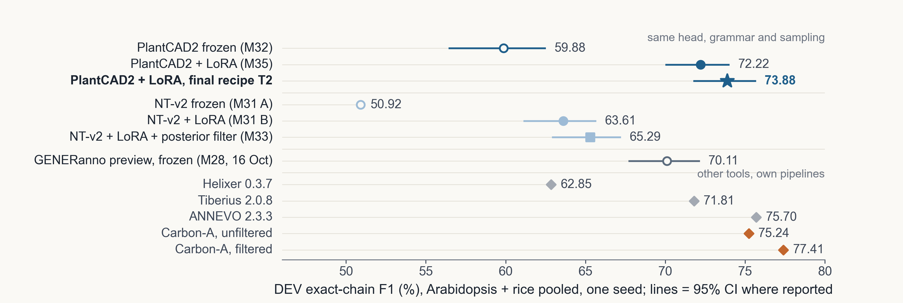
Reports 15, 17, 18, 20 §7, 21 · DEV is in PlantCAD2 pretraining and Carbon-A training: an upper bound · one seed
8
What the slide shows. DEV exact-chain F1 for every backbone we have run under the same head, the same full CDS grammar and the same window sampling, with the other tools for reference. DEV is one reused development chromosome each of Arabidopsis and rice. It is an upper bound for every model on the slide: both species are in PlantCAD2’s pretraining set and in Carbon-A’s training data, and DEV has been used across many milestones. It ranks models; it does not test generalisation (set B and the panel slides do).
Numbers (pooled; Arabidopsis / rice in brackets; 95% CI from a 1-Mb block bootstrap, 54 blocks, 2,000 draws).
- NT-v2 frozen 50.92 (54.49 / 42.53); with LoRA 63.61 [61.17, 65.62] (66.62 / 56.35); with the M33 posterior filter 65.29 [62.95, 67.17].
- PlantCAD2-Small frozen 59.875 [56.48, 62.45] (65.21 / 48.06); with LoRA (M35, 1,536 steps) 72.22 [70.05, 73.97] (74.05 / 67.84); final recipe T2 (M34 sampler, 3,072 steps, step 2,304 chosen on internal validation) 73.88 [71.80, 75.63] (75.38 / 70.22).
- GENERanno preview, frozen, the 16 October model (M28 fresh-joint): 70.107 [67.74, 72.11].
- Other tools: Helixer 0.3.7 62.851, Tiberius 2.0.8 71.805, ANNEVO 2.3.3 75.703 (earlier DEV values, not rerun, so no strata or CIs); Carbon-A 75.241 unfiltered and 77.406 filtered (recomputed with our functions, identical to the earlier values).
Paired differences (same bootstrap). LoRA gain: NT-v2 +12.7 (point difference); PlantCAD2 +12.34 [+10.81, +14.29]. Backbone at equal recipe: M35 − NT-v2 + LoRA = +8.61 [+7.57, +9.80]; this was the pre-registered rule that picked PlantCAD2 for M34. M35 − GENERanno = +2.11 [+1.28, +3.05], the first time a purely self-supervised backbone beat the annotation-supervised one under our grammar. T2 − NT-v2 + LoRA = +10.27 [9.21, 11.46]; T2 − GENERanno = +3.77 [2.80, 4.88]; T2 − filtered Carbon-A = −3.53 [−4.41, −2.76].
How to read it. The claim is “backbone-agnostic”: the grammar layer works on a non-plant self-supervised model (NT-v2), a plant self-supervised model (PlantCAD2) and an annotation-supervised model (GENERanno), and LoRA helps both self-supervised backbones by the same amount. The ranking among backbones is a controlled comparison, which the literature notes (review 05 §3.2) list as missing. T2 against M35 (+1.66) is not a controlled comparison: the sampler and the number of steps both changed.
Caveats. T2 now has three runs: DEV 73.88 / 74.09 / 71.65 (mean 73.21 ± 1.35, report 20 §14); every other model one run. The tools ran their own pipelines with plant weights: Helixer 0.3.7 land_plant_v0.3_a_0080, Tiberius 2.0.8 angiosperm weights (inside a 2.0.7 container), ANNEVO 2.3.3 Magnoliopsida; they were run once on Baobab on 3 October and their DEV values were not rescored since. Scoring asymmetry found in this review: our arms drop predicted chains with less than 96 bp of CDS before scoring, the tools’ rows do not. For our models this changed F1 by 0 to +0.23; for the tools it was never measured. The panel scoring (report 31) applied the rule to every tool and also reports the rule-off value. GENERanno and Carbon-A share their main weights, and Carbon-A was trained with annotation of both DEV species, as were Helixer’s and (for rice) Tiberius’s weights.
Changed since 16 October. Then, the method line was the GENERanno model at 70.107 and the goal was to beat Carbon-A on accuracy. Now GENERanno is one of three backbones, and PlantCAD2 + LoRA is the final recipe.
C1 · Zero-shot on new plants
Zero-shot on two time-held-out plants, T2 is 5.4 and 4.9 points below filtered Carbon-A; with NT-v2 the gap was 24 and 29
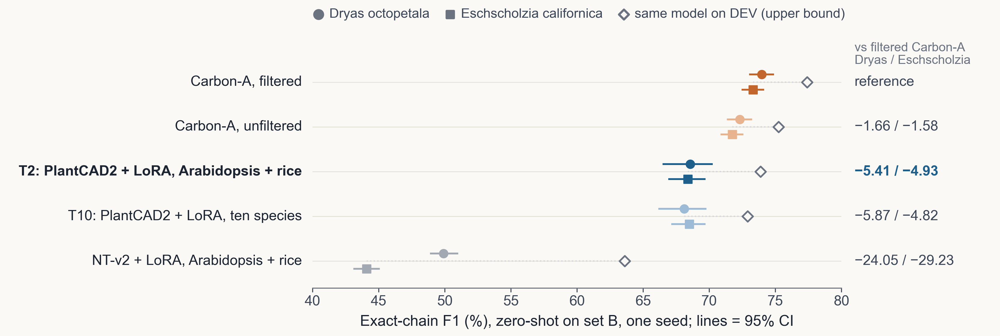
Report 20 §10 (P2b) and report 18 §3 · set B scored once per model · no posterior filter on our models · one seed
9
What set B is. Held-out chromosomes of two plants whose genome releases postdate the training data of the tools we compare against (time-held-out; M30 protocol 13 §2): Dryas octopetala, 4 chromosomes, 102.8 Mb, 9,508 reference genes; Eschscholzia californica, 3 scaffolds, 170.5 Mb, 12,367 genes. Neither species is in PlantCAD2’s pretraining or in any of our training sets. Each model is scored once, zero-shot, without our posterior filter.
Numbers (Dryas / Eschscholzia).
- T2 (PlantCAD2 + LoRA, trained on Arabidopsis + rice only): 68.57 [66.55, 70.20] / 68.39 [66.98, 69.65].
- T10 (same recipe, ten species): 68.11 / 68.50.
- NT-v2 + LoRA (M31 B): 49.92 [48.95, 50.95] / 44.09 [43.17, 45.02]; with its posterior filter 52.40 / 46.39.
- Carbon-A unfiltered 72.32 / 71.75; filtered 73.98 / 73.32 (recomputed three times with identical results: M30, M33 and M36).
- Gaps to filtered Carbon-A: T2 −5.41 / −4.93; T10 −5.87 / −4.82; NT-v2 + LoRA −24.05 / −29.23 (paired, report 18); unfiltered minus filtered Carbon-A −1.66 / −1.58. Against unfiltered Carbon-A, T2 is −3.75 / −3.36. (The outline of 21 October paired the unfiltered NT-v2 scores with the filtered-NT-v2 gaps, 21.6 / 26.9; the unfiltered gaps are 24.05 / 29.23.)
Yardsticks. T2 and T10 CIs come from a 1-Mb block bootstrap; NT-v2 and Carbon-A CIs from the gene-unit bootstrap used in M33. There is no paired CI for T2 versus Carbon-A on set B yet; the gaps above are point differences.
What changed the picture. On 21 October (M33) the cross-species result looked like a collapse: NT-v2 + LoRA lost 13.7 and 19.5 points from DEV to set B, against 2.9 and 3.5 for Carbon-A. Swapping in the plant-pretrained backbone moved set B from 49.9 / 44.1 to 68.6 / 68.4 under the same grammar and the same two training species. So the collapse came mostly from the backbone, not from the number of training species (ten species did not help either; see Tested and dropped).
What it does not show. The drop from DEV to set B for T2 (−5.3 / −5.5) mixes generalisation with exposure: the DEV species are in PlantCAD2’s pretraining and the set B species are not. Two species are not a panel; on the ten-plant panel the gap to filtered Carbon-A widened to 12.60 points (the verdict slide). Posterior filtering is not applied here; on T10 it adds +2.03 / +1.47 (68.11 to 70.14, 68.50 to 69.97; report 27 §4), which would leave T10 3.8 / 3.4 points below filtered Carbon-A. T2’s filtered set B numbers have not been computed.
The sentence in the outline (draft): “trained only on Arabidopsis and rice annotation, PlantCAD2 + LoRA approaches Carbon-A zero-shot on time-held-out plants not in its pretraining” — this sentence is withdrawn: the panel criterion failed on 17 November.
C1 · The panel
The panel: ten plants, 4.79 Gb, none in PlantCAD2’s pretraining as a species; half RefSeq, half submitter-annotated
Species Annotation Mb ≥70% id In Carbon-A Note Dryas octopetala RefSeq, Jul 2026 229 29% family contains set B Eschscholzia californica RefSeq, Jul 2026 379 25% tribe contains set B Akebia trifoliata RefSeq, Jul 2026 606 25% order Hakea prostrata RefSeq, Oct 2026 663 26% family Amborella trichopoda RefSeq, Sep 2026 700 23% same species older assembly Zizania latifolia Submitter, Mar 2025 572 72% tribe rice’s tribe Themeda triandra Submitter, May 2026 746 28% tribe 46% no hit Juncus effusus Submitter, Jan 2023 240 28% order Rhynchospora breviuscula Submitter, Jan 2023 370 27% tribe Acorus gramineus Submitter, Aug 2023 289 21% none Tiberius: genus
PANEL-PREP species and homology tables · reports 10 §1.7, 25 · ≥70% id = proteins vs T2’s training set · scored once, 17 Nov
10
What the panel is (reports 10 and 25, PANEL-PREP results). Twelve plant genomes were prepared; the core 10 shown here exclude Chenopodium album (its congener C. quinoa is in PlantCAD2’s pretraining) and the fern Dipteris. Inference uses the main nuclear sequences only: 119 sequences, 4,793 Mb (the NCBI totals, 5.1 Gb, are what the outline quotes). The decision panel-baselines (22 October) fixed the core 10 as the scope.
Annotation tiers. TH, strict time hold-out: no RefSeq record before, and the first RefSeq annotation dated on or after 23 February 2026 (Dryas, Eschscholzia, Akebia, Hakea). AH, version hold-out only: Amborella, whose new RefSeq assembly and annotation (September 2026) are held out but whose species is in Carbon-A’s data (older assembly AMTR1.0) and in Helixer’s validation. SH, source hold-out: five species annotated by their submitters (Zizania, Themeda, Juncus, Rhynchospora, Acorus), with undisclosed methods and no BUSCO or RNA-seq qualification yet.
Columns. Mb = main nuclear sequence length used. ≥70% id = share of the species’ reference proteins with at least 70% identity to a protein of T2’s training species (Arabidopsis + rice), from the MMseqs2 audit. In Carbon-A = the closest relationship between the panel species and any Carbon-A training species (report 10 §1.7 letters: S same species, G genus, Tr tribe or subfamily, F family, O order only).
Things to keep in mind when reading the numbers.
1. Dryas and Eschscholzia contain the set B chromosomes, which T2 has already been scored on (68.57 and 68.39). Two of ten species are therefore partly known.
2. Zizania is in rice’s tribe: 72% of its proteins have a ≥70% match in T2’s training data. It is the most familiar species for T2 and should be expected to score high; report 10 had planned it as the “close relative” layer.
3. Amborella’s species is in Carbon-A’s training data (older assembly), so Carbon-A has an advantage there. Plan 19 and report 10 disagreed on whether Amborella counts in the C1 median; the scored median includes all ten core species.
4. Themeda: 46% of reference proteins have no hit at all, and the submitter lists many more protein-coding genes than usual; low scores there may say more about the reference than the models.
5. Acorus: Tiberius has a species of the same genus in training.
6. Baselines’ training sets were not homology-audited, only listed by species.
The rule (next slide) counts every core species except where noted, takes the species median, and compares it with the medians of Helixer, Tiberius and filtered Carbon-A run on the same sequences and scored with our ruler.
C1 · The test that decided
C1 fails: on the ten-plant panel T2’s median is 55.05, 12.60 below filtered Carbon-A and below Tiberius and Vipsania
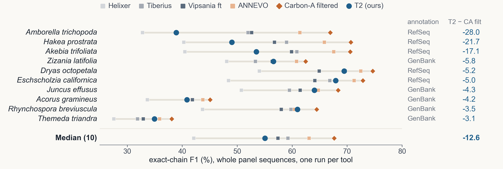
Report 31 §6 · core-10 panel, whole sequences · exact-chain F1, CDS ≥ 96 bp · one run per tool, scored once on 17 Nov
11
The rule (registered 27 October, report 28 §6; tiers in outline §0 and report 31 §2.4). On the core-10 panel, zero-shot, no posterior filter: C1 holds if T2's species median is at least the medians of Helixer a0080, Tiberius and Vipsania fine-tuned (added by your decision vipsania-c1-criterion on 4 November, before any Vipsania number), and within θ = 6.0 points of filtered Carbon-A. Partly holds: gap 6–10, or below one of those tools. Fails: gap over 10.
Result (17 November, scored once). Medians: T2 55.05 [54.23, 55.78]; Helixer 42.10; Tiberius 59.25; Vipsania ft 57.41 (pre-trained 54.69); ANNEVO 63.08; Carbon-A unfiltered 65.73, filtered 67.65 [67.05, 68.25]. T2 − filtered Carbon-A = −12.60 [−13.65, −11.65]; T2 − Tiberius −4.20; T2 − Vipsania ft −2.36. Verdict: fails.
Where the gap is. Three RefSeq species with long, many-exon genes: Amborella −28.0 [−28.96, −27.11], Hakea −21.7, Akebia −17.1. On the five submitter-annotated (GenBank) species the medians are T2 56.61, Tiberius 53.32, Vipsania ft 56.39, filtered Carbon-A 62.45 (gap 5.8); on the five RefSeq species T2 53.49 against 70.69 (gap 17.2). The C4 long-gene slides explain most of the RefSeq gap.
The seed rule (registered 7 November) was triggered: T2_s2 and T2_s3 should be run on the panel. They have not run; they would only report the spread and do not change the verdict.
What it means for the paper. The accuracy claim is gone; zero-shot numbers become an honest benchmark and a limitation. The outline of 17 November moved C2 to the lead and set Genome Biology or NAR Genomics and Bioinformatics as targets.
Caveats. One run per tool. Dryas and Eschscholzia contain the set B chromosomes that T2 had been scored on. Amborella is in Carbon-A's training data (older assembly). GeneCAD (PlantCAD2 + CRF, the closest published method) is missing from the table; whether to run it is on the questions slide.
C2 · Learning from incomplete annotation
On frozen Carbon-A features, marginalising the unlabelled genes avoided the recall collapse of fill-background (+16.5 / +14.2) but gained nothing
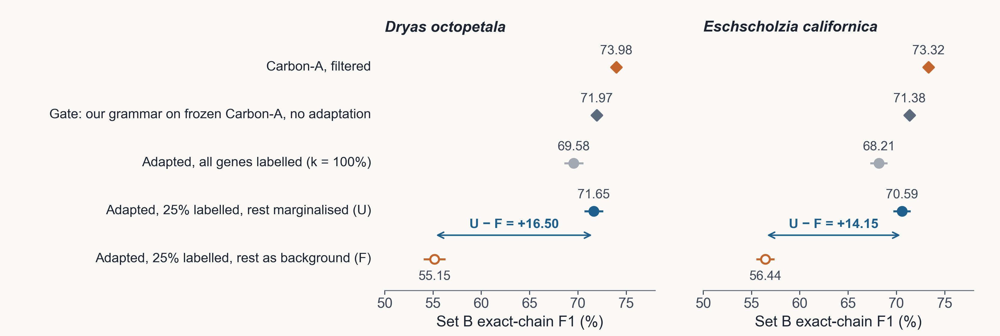
Report 14 §2–4 (protocol 13, fixed 17 Oct) · set B, scored once · head-only adaptation · gene-unit bootstrap · one seed
12
What M30 asked (17–19 October, right after the pivot away from the accuracy race). On a new species with only part of its genes annotated, does adapting the grammar layer on top of frozen Carbon-A features beat Carbon-A itself, and is marginalising the unlabelled genes better than calling them background? Protocol 13 was written before any new-species output. Training used other chromosomes of the same two set-B species; the B chromosomes were scored once.
Arms. The gate is our grammar decoding Carbon-A’s own frozen per-base outputs with no adaptation. U and F adapt the head with 25% of the species’ genes labelled; U marks the other genes’ loci as unknown, F calls them background. k = 100% adapts with every gene labelled. The k = 10% arms were cancelled by decision.
Criteria and verdicts (report 14 §4).
- Direction, main endpoint: k = 25% U minus filtered Carbon-A ≥ +3.0 in both species. Result −2.32 [−2.72, −1.94] and −2.73 [−3.17, −2.36]. Not met.
- Direction, secondary: U with Carbon-A’s confidence filter minus filtered Carbon-A ≥ +3.0. Result −0.53 and −0.79. Not met.
- Mechanism: U − F ≥ +2.0, same sign in both species. Result +16.50 [+15.65, +17.37] and +14.15 [+13.47, +14.82]. Met.
What happened. F collapses recall: 44.4% and 46.6% of reference genes recovered, against 71.4% and 68.7% for U, because a quarter-labelled genome teaches that most genes are background. But U is no better than not adapting at all: U − gate = −0.32 [−0.69, +0.05] and −0.79 [−1.19, −0.39]. Even full labels (k = 100%) are 2.40 and 3.16 points below the gate. A 366k-parameter head on frozen Carbon-A features has nothing new to learn; the M29 runs on Arabidopsis and rice had already suggested this.
What this left us with on 19 October. The second layer of C2 (marginalise beats fill) held; the first layer (adaptation beats Carbon-A) did not. Because the features were frozen and annotation-supervised, it was unclear whether marginalisation helps when the backbone can actually learn. That question became P4 on the PlantCAD2 backbone (the P4 slides), where it held as well.
Yardsticks. Set B, scored once per arm. CIs from the gene-unit + 100 kb orphan-bin bootstrap (2,000 draws). Each arm trained once. ANNEVO and Helixer were not run on set B (no environment on ont).
C2 · Learning from incomplete annotation
P4 holds in both seeds: marginalising beats fill-background in 8 of 8 species, by +3.24 and +14.97 (mean +9.10)
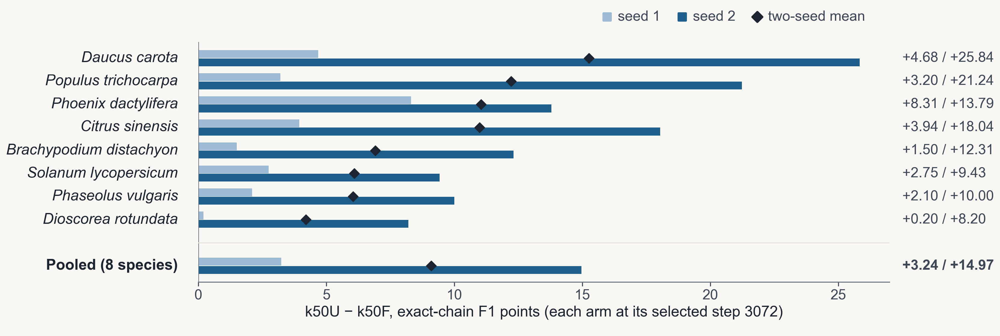
Report 20 §13, §16.2 · 8 new species, validation regions, 5,793 references · each arm at its selected step 3,072 · two runs per arm
13
The test. Ten training species with PlantCAD2 + LoRA: Arabidopsis and rice fully labelled, and eight new species with half of their genes labelled. k50U treats the other half's positions as unknown and sums over them; k50F calls them background. Scored on the eight new species' internal-validation regions (5,793 reference chains), each arm at the checkpoint its own rule selects on Arabidopsis + rice (step 3,072 in all four arms).
Criteria. Seed 1 (registered before results, plan 19): k50U − k50F ≥ +2.0 pooled, same sign in ≥ 6 of 8. Seed 2 (registered 9 November, before any seed-2 output): the two-seed mean ≥ +2.0 and the per-species mean positive in ≥ 6 of 8.
Results. Seed 1: 67.86 − 64.62 = +3.24, 8 of 8 (2 November). Seed 2: 69.03 − 54.06 = +14.97, 8 of 8 (21 November). Mean +9.10, per-species means +4.20 to +15.26, 8 of 8. Holds.
What drives the margin. In seed 1, recall: k50U finds 4,023 of the 5,793 reference chains, k50F 3,609. In seed 2 almost all of the margin is k50F_s2 under-calling (recall 43.7% against 62.3% in seed 1); k50U_s2 itself is only 1.2 points above k50U. So the average is driven by one checkpoint; the paper should report the two seeds separately.
Against full labels (T10, 69.62, one run): two-seed means k50U −1.18, k50F −10.28. Against no labels at all: T2, which never saw these species, scores 68.84 (three T2 runs: 68.84 / 67.28 / 65.83). This is the second critique on the next slides.
On DEV (fully labelled in both arms) fill-background still costs: k50F − k50U = −1.29 and −0.92, both CIs excluding 0.
Caveat. Both seeds placed the unknown positions using the complete annotation (which genes were unlabelled is known exactly), so this is the upper-bound setting.
C2 · Learning from incomplete annotation
But training is unstable: U − F is positive at 3 of 4 stops in each seed, negative at step 2,304, and F1 can fall 40 points between stops
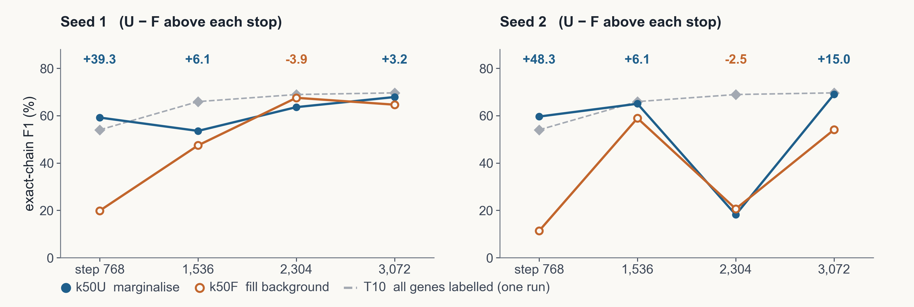
Report 37 §C.1 (plan written before computing) · 8 new species, validation regions · CIs from a 1-Mb block bootstrap
14
What this adds (report 37 part A, descriptive, plan committed before computing). The P4 verdict uses each arm's selected checkpoint. Here are all four stops of both seeds, with the difference split into a "true positives" term (2Δtp over F's pred + ref) and a "number of predictions" term.
Seed 1, U − F [95% CI], tp term / pred term, species positive: 768 +39.33 [+36.88, +41.69], +65.26 / −25.93, 8 of 8; 1,536 +6.12 [+4.33, +7.93], +6.27 / −0.15, 8 of 8; 2,304 −3.94 [−5.02, −2.93], +3.09 / −7.04, 0 of 8; 3,072 +3.24 [+2.29, +4.18], +7.41 / −4.17, 8 of 8.
Seed 2: 768 +48.27 [+45.41, +51.30], 8 of 8; 1,536 +6.11 [+5.15, +7.11], 8 of 8; 2,304 −2.49 [−4.13, −0.99], 1 of 8; 3,072 +14.97 [+13.08, +16.86], 8 of 8.
Reading. (1) Where U wins, it wins on true positives: it finds more correct genes; F's under-calling (negative pred term) actually shrinks the margin. (2) Step 2,304 is negative in both seeds: in seed 1 because U over-calls (7,204 predictions against 5,909 for F); in seed 2 because both arms collapse (F1 18.1 and 20.6). (3) Partial-label training is unstable: within one arm F1 moves by 40–50 points between neighbouring stops (k50F 11–20 at step 768; k50U_s2 18 at 2,304), while full-label T10 rises steadily (53.99, 65.92, 68.92, 69.62). (4) Pairing every stop of U with every stop of F (16 combinations): seed 1 positive in 10, range −13.98 to +48.01; seed 2 positive in 13, range −40.78 to +57.69.
How to write it. "Marginalising let the model find more correct genes at most checkpoints, but partial-label training was unstable" — not a single effect size. The mean +9.10 is a by-product of two checkpoints.
Count check: all 160 region-level counts (5 arms × 4 stops × 8 regions) equal metrics.jsonl.
C2 · Where it stops
With pseudo-labels the advantage is gone: all seven adaptation arms end 1.5–7.7 points below zero-shot (M36 NO-GO)
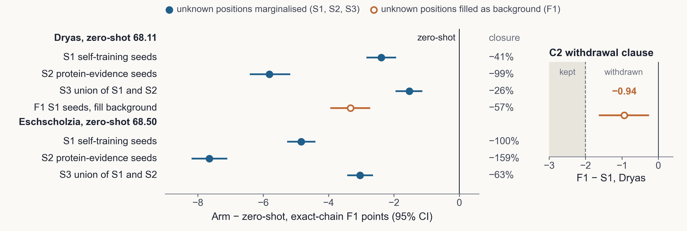
Report 27 §2–3 · set B, evaluated once · base model T10, 512 LoRA steps per arm, one seed · gene-unit bootstrap CI
15
What M36 asked. Can the model adapt to a new genome without reference labels, by training on its own confident predictions or on protein alignments as fine labels and marginalising everything else? On 21 October this was promoted to the paper’s first claim. Protocol 22 fixed the criteria before any output (ambiguities resolved on 26 October, decision m36-ambiguities).
Design. Base model T10 (PlantCAD2 + LoRA, ten species, step 3,072). Arms: Z = zero-shot; S1 = self-training seeds (zero-shot chains with log P ≥ −1.400 and CDS ≥ 96 bp); S2 = miniprot protein-alignment chains; S3 = S1 ∪ S2; F1 = S1 seeds with the rest filled as background (Dryas only). 512 LoRA steps each. Scored once on set B (Dryas: 4 chromosomes; Eschscholzia: 3 scaffolds). Main statistic: paired bootstrap over gene units plus 100 kb orphan bins; the 1-Mb block bootstrap gives the same verdict.
Criteria. GO: S1 or S3 closes at least 30% of the gap between Z and filtered Carbon-A in both species, with the CI of (arm − Z) above 0. GO-strong: S2 or S3 within 2.0 points of filtered Carbon-A in both species. NO-GO: no S arm reaches 30% closure in a species. C2 withdrawal clause: if F1 − S1 ≥ −2.0, the marginalise-beats-fill claim is withdrawn for this setting.
Result (report 27, 31 October). Every arm is below Z: Dryas S1 −2.39, S2 −5.81, S3 −1.53, F1 −3.33; Eschscholzia S1 −4.84, S2 −7.65, S3 −3.04; every CI is entirely below 0. The best closure is S3 at −26% and −63%. NO-GO. F1 − S1 = −0.94 [−1.61, −0.28]: fill is still worse, but by less than 2 points, so the withdrawal clause is triggered.
How it fails (descriptive, report 27 §4). Marginalised arms keep the same number of correct chains but predict more (Dryas Z 9,791 predictions; adapted arms up to about +29%): unknown regions do not penalise extra calls. F1 under-calls instead (5,827 correct versus 6,572). The seeds were noisy: S1 precision 0.746 / 0.729 and recall 0.677 / 0.665; S2 precision 0.77–0.78 but recall only 0.234 / 0.146. Posterior filtering lifts every arm but all stay below filtered Z. Self-training also breaks calibration: S1 ECE 0.187 / 0.208 versus 0.059 / 0.089 for Z.
Consequences. The bootstrap direction is dropped and reported as a pre-registered negative result (draft Supp. S10). C2 is narrowed to reference labels that are correct but incomplete (previous two slides). In the draft outline revision, Nature Methods is no longer a target because the only route to it was a GO-strong M36. The outline of 17 November adopted that revision.
If asked “so is marginalisation wrong?” — no: with correct labels it avoids the recall loss (M30, P4); with noisy positive labels it lets errors in unknown regions go unpunished. Usable incomplete supervision is “correct but partial”, not “plentiful but noisy”.
C2 · Two critiques (23 November)
An outside review found two weak points: the unknown mask was placed with the full truth, and partial labels added nothing over zero-shot
1 · The mask borrowed the truth
In M30 and P4 the positions of the unlabelled genes came from the complete annotation and were then marked unknown.
A real genome does not say where its missing genes are. These tests measure an upper bound; report 19 §3.10 already called it that.
2 · No net gain from partial labels
On the eight new species: T2 with no labels of them 68.84; k50U 67.86 / 69.03; full labels (T10) 69.62.
What C2 shows is that marginalising avoids the loss of filling (k50F 64.62 / 54.06), not that partial labels help.
Response: M42 tests C2 on a real incomplete annotation (next slides). Caveat on critique 2: T2’s three runs span 65.83–68.84 on these regions, so the comparison depends on which T2 run is used.
Presubmission plan 20261123 §1 · reports 19 §3.10, 20 §13–16 · checked by me against the reports
16
Where this came from. On 23 November, at your request, the repository was pushed and ChatGPT ("看论文" project) assessed whether the results make a Nature-family story. I verified every point before writing it down (presubmission plan §1). Two critiques were correct and material.
Critique 1. The U arm in M30 and P4 takes the complete reference annotation, removes a fraction of genes from the labels, and marks exactly those genes' loci as unknown. In a newly sequenced genome nobody knows where the missing genes are: they sit somewhere in the unannotated background. So M30 and P4 test "partial observation when the missing positions are known". Our own report 19 §3.10 had labelled this an upper-bound setting; the paper outline had not.
Critique 2. If partial labels are useful, a model trained with them should beat a model that never saw the species. On the same eight validation regions: T2 (trained only on Arabidopsis + rice, zero labels of the eight species) 68.84; k50U 67.86 (seed 1) and 69.03 (seed 2); T10 (all labels) 69.62; k50F 64.62 and 54.06. So half the labels plus marginalisation is roughly as good as no labels at all, while half the labels plus filling is clearly worse. The claim that survives is defensive: marginalising prevents a loss.
Verification note (24 November): T2's three seeds give 68.84 / 67.28 / 65.83 on these regions (mean 67.32); the two-seed k50U mean is 68.45, 1.1 above that T2 mean. So "no net gain" holds against the best T2 run and becomes a small gain against the average run: the comparison is within seed variation either way.
Response chosen. Route B, gates 0 and 1 (your decision, 23 November): build an oracle-free test where the labels and the unknown mask come only from information available in practice. That is M42 (next three slides). Literature checked at the same time: partial-label CRF training is not new (Tsuboi et al., COLING 2008, the same objective); CRFs for gene prediction exist (Conrad, CRAIG); GeneCAD already combines PlantCAD2 with a CRF. Novelty can only come from what the combination enables on real incomplete annotation.
C2 · Oracle-free test (M42)
M42 tests C2 on a real incomplete annotation: the 2016 RefSeq release of jujube as labels, the 2018 release as truth
Data: Ziziphus jujuba, one assembly, two releases (AR100 2016 → AR101 2018); 6 chromosomes train (A), 6 evaluate (E)
Labels: 10,472 complete old genes on A as positives
Unknown: cross-species protein hits ±2 kb (V1), or everything (V3)
Arms: Z zero-shot T2 · U marginalise · F fill · U3 all unknown; 512 LoRA steps from T2
Rules: written before results (protocol 35); new release read only at the end
Gate 0 audit on A Missing loci fully unknown Unknown share V1 evidence ±2 kb 32.8% (247 / 753)24.4% Random, like V1 11.2% 21.2% V2 evidence ±10 kb 57.1% 56.5% ✗ V3 all unknown 81.7% 100% Oracle (as in P4) 100% 1.7%
Gate 0 passed with V1: it covers missing genes 2.9× better than chance, but two thirds of them still sit partly in background.
Protocol 35 §1–§7 · GCF_000826755.1 · audit on training chromosomes A only · 753 missing loci on A
17
Design (protocol 35, committed before any data were downloaded). Species chosen from NCBI metadata only: same assembly accession with an older and a newer RefSeq annotation release, chromosome level, not in PlantCAD2's pretraining, enough newly added genes. First choice Ziziphus jujuba (Rosales; AR100 March 2016 → AR101 May 2018; 438 Mb); confirmation species Solanum pennellii; an insect added for gate 2 by your decision.
Split. Twelve chromosomes ranked by length; odd ranks train (A), even ranks evaluate (E).
Positives. Old-release representative transcripts on A that are complete and valid (start/stop, frame, canonical splice sites, no gaps): 10,472 of 11,271 genes.
Evidence. miniprot alignments of the same ten species' proteins used in M36 (not jujube's own): hits with ≥ 50% coverage and ≥ 40% identity.
Masks frozen before the new release was opened: V1 = evidence spans ±2 kb; V2 = ±10 kb; V3 = every non-positive base. Positives ±1 kb are never unknown.
Gate 0 audit (A only, new release read after freezing). 753 genes are new in AR101 (no CDS overlap with AR100); 1,734 revised; 8,996 identical; positives cover 91.7% of identical genes. Missing loci fully inside the unknown region: V1 32.8% (random mask of V1's size 11.2%), V2 57.1% but 56.5% of non-positive bases unknown (rule ≤ 30%: fails), V3 81.7%, oracle 100% with only 1.7% unknown. Rule: V1 passes (≥ 2× random, ≤ 30% unknown) and goes to gate 1; V3 runs as the no-negative-constraint reference.
Gate 1 arms. Z = T2 zero-shot. U = positives + V1 unknown + rest background. F = positives + everything else background. U3 = positives + V3. L (per-position cross-entropy) was dropped after it collapsed in the smoke test, before any scoring (your decision). Continue rule after that revision: U − Z > 0 and U − F > 0 in F1, U's missing-locus recall above Z's, and U's precision not more than 2 points below Z's.
Compute. CAU ChaoBaiHe 4090 (hhbgroup02), about 41.5 yuan in total.
C2 · Oracle-free test (M42)
Gate 1 stops: on real missing genes U is 2.0 points below zero-shot T2 and finds no more of them; it beats fill-background only on missing loci
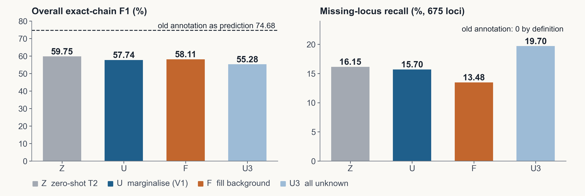
Protocol 35 §8.3 · jujube E chromosomes, 10,266 references, 675 missing loci · one run per arm
18
Result (24 November, scored once on the Mac; the new release never left it). References on E: 10,266 CDS-assessable primaries of AR101, of which 675 are missing from AR100 (274 with protein evidence, 401 without), 7,848 identical and 1,743 revised.
F1 / precision / recall / missing-locus recall (with evidence / without) / recall of old-identical genes / predictions overlapping no gene:
Z 59.75 / 60.10 / 59.41 / 16.15 (22.3 / 12.0) / 72.2 / 407.
U 57.74 / 57.24 / 58.25 / 15.70 (20.1 / 12.7) / 71.0 / 477.
F 58.11 / 60.56 / 55.85 / 13.48 (16.4 / 11.5) / 68.4 / 282.
U3 55.28 / 50.76 / 60.68 / 19.70 (21.9 / 18.2) / 73.5 / 1,501.
Old annotation used as a prediction: 74.68 / 74.46 / 74.90 / 0 / 98.0 / 225.
Paired differences, 1-Mb block bootstrap (154 blocks, 2,000 draws): U − Z F1 −2.01 [−2.56, −1.50], missing-locus recall −0.44 [−1.98, +1.20]. U − F −0.37 [−0.75, +0.01] and +2.22 [+0.91, +3.62]. U − U3 +2.46 [+2.04, +2.95] and −4.00 [−5.75, −2.35].
Verdict: stop. None of the three continue conditions holds (U − Z and U − F both ≤ 0; U's missing-locus recall 15.70 ≤ 16.15; precision 2.86 below Z).
Reading (descriptive). (1) 512 steps of adaptation with the old annotation lowered F1 in all three trained arms (−1.6 to −4.5), as in M36. (2) The only detectable advantage of marginalising over filling is on missing loci (+2.2). (3) Without negatives (U3) the model finds more missing loci (19.7%, even 18.2% without evidence) at the cost of 21% more predictions. (4) Every model is far below simply keeping the old annotation (74.68): in practice a model could only add new loci.
Consequence (protocol 35 §4.4). C2 is written as "partial observation when the missing positions are known" (upper bound); route A; no gate 2.
C2 · Could it help in practice? (post hoc)
Added on top of the old annotation, model genes in its gaps recover 7–20% of missing loci but lower F1, because only 5–15% of them are right
Old annotation plus Added chains Right among added F1 Missing loci found nothing — — 74.68 0 Z inside evidence regions 431 14.8% 73.75 9.5% U inside evidence regions 465 12.3% 73.57 8.4% F inside evidence regions 309 14.9% 74.01 6.8% U3 inside evidence regions 891 7.6% 72.21 10.1% Z anywhere in the gaps 949 11.5% 72.40 16.2% U anywhere in the gaps 1,140 9.3% 71.73 15.7% U3 anywhere in the gaps 2,492 5.3% 67.77 19.7%
Protocol 35 §8.4 · rules written before running · jujube E · old-identical genes kept at 98.0% in every row
19
Why this analysis (your decision "路线A加合并分析", 24 November). If the model cannot replace an old annotation, can it at least add the genes the old annotation missed, without harming the genes it already has right? The rules were written and committed (e2478e9) before running.
Rules. Keep every old CDS chain on E. Add a model chain if no CDS base overlaps any old CDS on either strand (G0, "anywhere in the gaps"), or additionally only if its CDS span lies entirely inside the E evidence region, i.e. protein hits ±2 kb (G1, "inside evidence regions"; 64.6 Mb, 43% of E). Same ruler and bootstrap as gate 1.
Results. Every merged set keeps 98.0% of the old-identical genes. Missing-locus recall rises to 6.8–19.7%, but the added chains are mostly wrong (5.3–14.9% hit a new-release chain exactly), so F1 drops 0.7 to 6.9 points below the old annotation. The pre-written "practical value" condition (F1 not lower and missing-locus recall higher) is not met.
Paired differences (1-Mb blocks): old + U (G1) − old: F1 −1.11 [−1.29, −0.92], missing loci +8.44 [+5.99, +10.90]. old + U (G1) − old + Z (G1): −0.19 [−0.29, −0.08] and −1.04 [−2.00, −0.15]. old + U (G1) − old + F (G1): −0.44 and +1.63 [+0.78, +2.59]. old + U (G0) − old: −2.94 and +15.70. old + Z (G1) − old: −0.92 and +9.48.
Reading. The evidence gate halves the additions and slightly raises their precision, but what it finds is almost only evidence-supported loci (0.7–2.2% of the evidence-free ones). U is again no better than the zero-shot model; it only beats F on missing loci (+1.63), consistent with gate 1. For the paper: an honest upper limit on recovering missed genes, and a stated limitation that model calls in annotation gaps are of low precision.
C3 · Calibrated gene posteriors
At τ = 1 the NT-v2 posteriors are calibrated (DEV ECE 0.031), and a threshold frozen before DEV adds +1.7 to +2.5 points
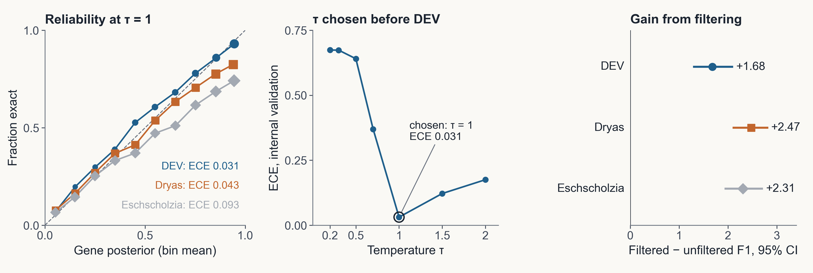
Report 18 (M33) and its raw JSON · τ and threshold chosen on internal validation · NT-v2 + LoRA only · one seed
20
What C3 claims. The partition function that trains the model also gives, for every predicted gene, the probability that it is exactly right. If those probabilities are calibrated, a user can trade precision for recall with a threshold, and no separate confidence network is needed (Carbon-A trains one).
How M33 tested it (NT-v2 + LoRA, the M31 B model). Every rule was fixed on internal-validation regions of Arabidopsis and rice before DEV or set B was opened: the temperature τ minimises pooled ECE over a grid (0.2 to 2), and the threshold on log P was fixed on the same regions (two chromosomes, 5,216 decoded chains, the same regions that chose the M31 checkpoint). Result: τ = 1, which means the trained energies need no rescaling, and the threshold is log P ≥ −1.400.
Numbers (chain-level posterior against exact-chain hit, 10 equal-width bins).
- Internal validation: ECE 0.031, AUROC 0.820 (the selection set).
- DEV: ECE 0.031, AUROC 0.817, AP 0.888; filtering keeps 88.6% of chains and moves F1 from 63.61 to 65.29, +1.68 [+1.31, +2.09].
- Set B Dryas: ECE 0.043, AUROC 0.785; filtering +2.47 [+2.12, +2.80].
- Set B Eschscholzia: ECE 0.093, AUROC 0.760; filtering +2.31 [+1.95, +2.70].
- The frozen threshold is close to the best possible on the new species: 52.40 versus 52.46 (Dryas) and 46.39 versus 46.43 (Eschscholzia) for the threshold that would have been best on that species.
How this changed since 16 October. Then C3 said the posteriors are “naturally calibrated”. The phase 0/1 diagnostics (report 09, on TRAIN) showed the GENERanno-based posterior was badly over-confident (ECE 0.156), so on 16 October C3 was reworded to “calibratable”. M29-A2 showed that the gate model, whose energies carry Carbon-A offsets, saturates at τ = 1 (95% of gene posteriors exactly 1, AUROC 0.587) and that rescaling to τ = 0.03 brings it to ECE 0.086. M33 then found the NT-v2 + LoRA model calibrated at τ = 1 without any rescaling. Why the 16 October GENERanno posterior was over-confident was not diagnosed separately.
What it does not show. This is NT-v2, not the final PlantCAD2 model; the next two slides show the final model on the panel. ECE drifts across species: 0.031 on DEV, 0.093 on Eschscholzia, three times larger. AUROC 0.76–0.82 means the posterior ranks genes usefully but is far from a perfect separator. Filtering cannot repair structural errors: the filtered NT-v2 model is still 21.6 and 26.9 points below filtered Carbon-A on set B (24.05 and 29.23 before filtering).
What the paper would say: “Gene posteriors from the partition function were calibrated without temperature scaling on the development species (ECE 0.031) and remained usable on time-held-out species (ECE 0.043–0.093); a threshold fixed on internal validation added 1.7–2.5 F1 points.” The C3 figure needs the PlantCAD2 / T2 version of these numbers.
C3 · Final model on the panel
T2’s posteriors rank chains well but are over-confident everywhere: the P ≥ 0.9 bin is right 77% of the time, and 58% in Themeda
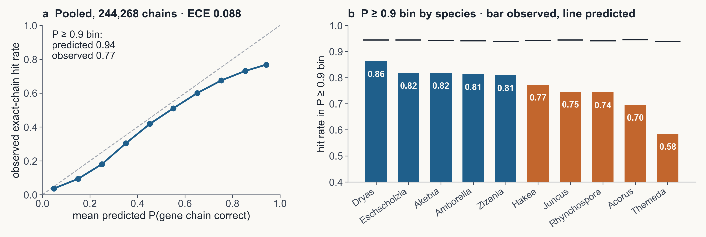
Report 36 §7 (plan written before computing) · core-10 panel, 244,268 chains · τ = 1 · exact-chain hit · one run
21
What was done (report 36; plan committed 8d2f82d before computing). Every gene chain T2 predicted on the core-10 panel has a posterior P(g) = exp(log_p) at τ = 1 (the temperature M33 chose). A chain is a hit if its exact CDS chain is in the panel reference (same ruler as report 31). Counts were checked first: per-species F1 of T2 and Carbon-A equal the panel table exactly.
Pooled reliability (10 equal-width bins). Observed hit rate is below the mean prediction in every bin, and the gap grows with confidence: 0.45 → 0.42, 0.75 → 0.67, 0.94 → 0.77. Ranking is monotone. ECE 0.088 [0.084, 0.091]; Brier 0.199.
Per species. ECE 0.047 (Dryas) to 0.219 (Themeda) and 0.214 (Acorus). The P ≥ 0.9 bin is predicted at about 0.94 in every species; observed: Dryas 0.86, Eschscholzia 0.82, Akebia 0.82, Amborella 0.81, Zizania 0.81, Hakea 0.77, Juncus 0.75, Rhynchospora 0.74, Acorus 0.70, Themeda 0.58.
The rule written before computing (report 36 §6): if pooled ECE > 0.10, or any species' high-confidence bin is more than 0.15 below its prediction, the main text must say "calibration is not reliable across species". Pooled ECE 0.088 does not trigger it; five species do (exact gaps: Themeda 0.353, Acorus 0.249, Juncus 0.199, Rhynchospora 0.197, Hakea 0.169). So: not reliable across species, systematically over-confident.
History. M33 (NT-v2 + LoRA): DEV ECE 0.031. T10 on set B (M36 §4): 0.059 / 0.089. The final model on new species is in the same range as T10 on set B, worse than NT-v2 on DEV.
Not done. T2 posteriors on DEV (would need GPU). A temperature refit on T2's internal validation (CPU) could reduce ECE but would not fix the species-to-species spread.
C3 · Final model on the panel
Ranking works: a threshold frozen on another backbone raises F1 in 10 of 10 species (+3.08 pooled); AUROC 0.77 against 0.58 for the decode gain
Report 36 §7 · threshold log P ≥ −1.400 from M33 (NT-v2), not re-tuned for T2 · Carbon-A ranked by its own confidence
22
Ranking. AUROC of log P against exact-chain hit: 0.768 pooled (species 0.682–0.874), against 0.581 for the decoder's gain score; difference +0.187 [+0.182, +0.192] (1-Mb block bootstrap, 4,779 blocks). AP 0.736 against 0.572. Carbon-A's dedicated confidence network ranks its own predictions with AUROC 0.751 (ECE 0.079); the two AUROCs are on different prediction sets, so not strictly paired.
Selective annotation. Keeping chains by posterior: precision 53.4 → 58.8 → 64.0 → 67.9 → 73.1 at 100 / 90 / 80 / 70 / 50% kept; F1 peaks at 80% (56.4 against 53.0). At 70% coverage T2's precision is 6.0 points below Carbon-A's at the same coverage [−6.3, −5.7]; this mostly reflects T2's weaker base predictions (unfiltered F1 7.4 points lower), not the posterior.
Frozen threshold. log P ≥ −1.400 was chosen by M33 on NT-v2's internal validation and never re-tuned. On the panel it keeps 85% of T2's chains and raises F1 in 10 of 10 species: Hakea +7.68, Amborella +7.52, Akebia +5.01, then +0.97 to +1.90; pooled 53.04 → 56.12 (+3.08). Carbon-A's own conf ≥ 0.1 filter gains +1.61 (60.41 → 62.02). Filtered T2 (56.12) remains below filtered Carbon-A (62.02).
What C3 can say. The gene-level posterior is a useful ranking score, far better than the decoder's gain and comparable to Carbon-A's separately trained confidence network; a threshold set on another backbone transferred to ten independent species. The probabilities themselves are over-confident and should not be read as error rates (previous slide).
C4 · Where the errors are
The gap is in many-exon genes: at ≥6 segments the plant backbone adds 15–18 points over NT-v2, and ten species add nothing
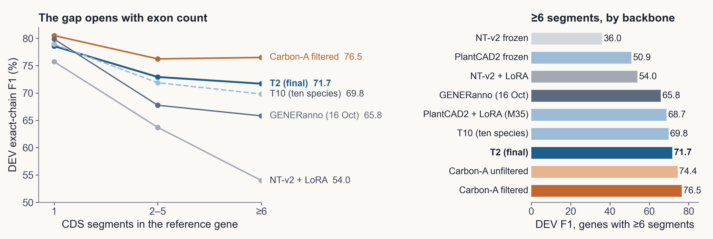
Reports 15, 17, 20, 21 · DEV, strata by CDS segments of the reference gene · one seed · descriptive, not controlled
23
What C4 says now. On 16 October, C4 was “the annotator’s main errors come from scoring competition between multi-exon structures, not from missing grammar capacity”, supported by a replay on TRAIN (next slide). Since then the strata on DEV have added a second, simpler reading: the gap to Carbon-A opens with the number of CDS segments, and it is the backbone, not the number of training species, that closes it.
Numbers (DEV exact-chain F1 for genes with 1 / 2–5 / ≥6 CDS segments; reference = one primary CDS-assessable transcript per gene).
- Carbon-A filtered 80.49 / 76.23 / 76.49; unfiltered 79.41 / 73.41 / 74.42.
- T2 78.56 / 72.92 / 71.69; T10 78.90 / 71.87 / 69.80.
- PlantCAD2 + LoRA (M35) 77.85 / 71.61 / 68.74; PlantCAD2 frozen 75.86 / 57.79 / 50.87.
- GENERanno (16 October model) 79.85 / 67.75 / 65.81.
- NT-v2 + LoRA 75.71 / 63.71 / 53.98; NT-v2 frozen 70.00 / 50.93 / 35.96.
Reading. For single-segment genes the five models in the left panel are within 5 points of each other (frozen NT-v2, not plotted there, is 10.5 below filtered Carbon-A). At ≥6 segments, swapping NT-v2 for PlantCAD2 under the same recipe adds 14.8 points (M35) and the final recipe 17.7 points (T2). Ten training species instead of two lower the ≥6 stratum by 1.9 (69.80 versus 71.69). The remaining gap of T2 to filtered Carbon-A at ≥6 segments is 4.8 points; at one segment it is 1.9.
So the candidate mechanism in the outline is now: “the connection-competition gap is set mainly by the backbone representation (a plant-pretrained backbone recovers about 15–18 points at ≥6 segments), not by the number of training species”. This is a description of strata, not a controlled decomposition; the outline says so explicitly.
What is still open. The matched replay that supported the original C4 (next slide) was run on the GENERanno model on TRAIN; it has not been repeated on PlantCAD2 + LoRA. Without it, “scoring competition, not grammar capacity” is a statement about the 16 October model. The replay needs CPU only.
If asked whether the strata are confounded: yes, partly. Genes with many segments are longer and differ in composition, and the strata come from one development chromosome per species. NT-v2 stays below PlantCAD2 in all three strata, which is the main point; GENERanno is the exception to a fixed ranking (best of our models at one segment, 79.85, but below the PlantCAD2 models from two segments on).
C4 · Where the errors are
Errors are wrong joins more than missed genes, and most misses lose to a competing chain; both shown only on older backbones
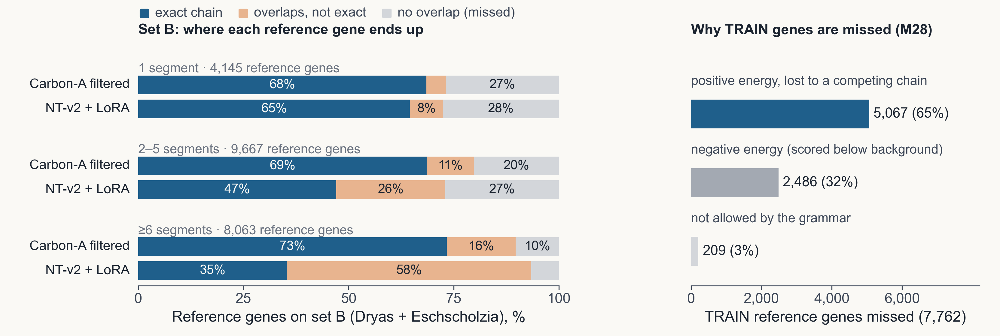
M33 failure-mode JSON (set B, NT-v2 + LoRA vs filtered Carbon-A) · report 04 replay (TRAIN, M28 joint encoding) · one seed
24
Left panel: where each reference gene of set B ends up (Dryas and Eschscholzia pooled, weighted by genes; raw file experiments/M33-NTV2-FOLLOWUP/results/diag_failure_modes.json). Three outcomes: an exact predicted chain; a predicted chain that overlaps but differs in at least one segment; no overlapping prediction.
- One segment (4,145 genes): Carbon-A 68% exact; NT-v2 + LoRA 65%. Misses dominate the errors for both (27–28%).
- 2–5 segments (9,667): Carbon-A 69% exact, 11% overlapping; NT-v2 47% exact, 26% overlapping.
- ≥6 segments (8,063): Carbon-A 73% exact, 16% overlapping, 10% missed; NT-v2 35% exact, 58% overlapping, about 7% missed.
So for multi-exon genes NT-v2 finds the gene (it overlaps something) but joins the exons wrongly. Report 18 states the overall share of “overlapping but not exact” as 33.6% and 35.0% for NT-v2, against 11–13% for Carbon-A.
Right panel: the matched final-update score replay of an M28 GENERanno model with joint encoding (24,576-bp windows, DEV 66.62; not the final fresh-joint model of 16 October, DEV 70.11) on TRAIN (report 04; experiments/M28/full_grammar/reports/full_grammar_matched_energy_diagnostic.md). Of 7,762 reference genes it missed, 5,067 (65%) could be represented by the grammar and scored above background but lost to an overlapping competitor in the decoded set; 2,486 (32%) scored below background; 209 (3%) were not allowed by the grammar. That is why C4 says “scoring competition, not grammar capacity”: the grammar almost never excludes the right answer.
Limits. Both panels come from backbones we no longer use as the final model: NT-v2 on set B and GENERanno on TRAIN (training data, so in-sample). The same breakdown for T2 has not been made. It compares predictions with references (M33’s diagnostic script), and T2 was run on set B for P2b, so it should be a CPU job if those predictions are still on ont (not checked here). The replay also needs the model’s energies; for T2 these would have to be recomputed, or taken from the panel inference while its potentials are still kept.
Why it matters for the paper. C4 is the explanation section: it tells the reader why a plant-pretrained backbone helps (previous slide) and where a better backbone or decoder would have to improve. As it stands it is evidence about the method in general, measured on older backbones; the outline marks the PlantCAD2 replay as [to fill].
What I would write today: “Most errors of the grammar layer are wrong exon joins rather than missed genes; in an M28 GENERanno model, 65% of missed genes were representable and scored positive but lost to a competing chain. A plant-pretrained backbone reduced the multi-exon deficit most (strata, previous slide).”
C4 · Where the errors are
Half of T2’s recall gap to Carbon-A is genes longer than 10 kb: recall falls to 24%, 3% and 0%, and the main error is splitting
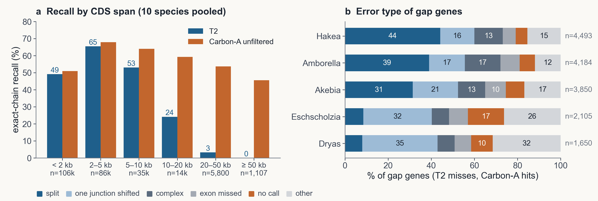
Report 37 §C.2 (plan written before computing) · core-10 panel, 247,922 references · M29 R4 error rules · one run per tool
25
What was done (report 37 part B). For every panel reference (247,922, same ruler as report 31), whether T2 and unfiltered Carbon-A reproduce its exact chain, stratified by CDS span and by exon count; each miss is put into one structural error class with the M29 R4 rules (no call, wrong strand only, merge, split, endpoint only, exon missed, exon extra, one junction shifted, complex).
Recall. Pooled T2 52.7, Carbon-A 59.1 (gap 6.5). By CDS span, T2 / Carbon-A: < 2 kb 49.1 / 50.9 (106,293 genes); 2–5 kb 65.4 / 67.9 (86,000); 5–10 kb 53.0 / 64.0 (34,891); 10–20 kb 24.1 / 59.2 (13,831); 20–50 kb 3.3 / 53.6 (5,800); ≥ 50 kb 0.0 / 45.6 (1,107). Genes ≥ 10 kb are 8.4% of the references but contribute 3.3 of the 6.5-point recall gap. By exon count the gap grows gradually (1: 50.2 / 52.7; 6–9: 56.9 / 65.8; 20+: 41.1 / 59.7); by span it falls off a cliff near 10 kb.
Gap genes (T2 misses, Carbon-A hits; 25,900 pooled; the reverse 9,794). Pooled: one junction shifted 23%, split 23%, single-exon miss 12%, no call 11%, complex 11%. Hakea (4,493): split 44%; Amborella (4,184): 39%; Akebia (3,850): 31%. Controls Dryas (1,650) and Eschscholzia (2,105): one junction shifted 35% / 32%, split only 8–9%. Monocots Zizania and Themeda: single-exon misses (29%) and no calls.
Reading. In the three species with the largest gap, long genes are cut into pieces: a long-range joining problem, consistent with the older C4 finding (errors are wrong joins). The grammar and decoder have no length cap (exact skyline decoding over whole sequences). A hypothesis, not tested: training windows have a 24,576-bp core, so genes longer than that were never seen complete in training. Short genes (2–5 kb) differ by only 2.5 points, mostly single shifted splice sites.
C4 · A fix that did not work
Separate long- and short-intron states (M41) did not close the multi-exon gap: −0.74 on genes with ≥ 6 segments, and 12% over-calling on set B
T2 M41 M41 − T2 [95% CI] DEV, all genes 73.88 73.26 −0.62 [−1.19, −0.03] DEV, ≥ 6 segments 71.69 70.95 −0.74 [−1.71, +0.23] Set B, pooled 68.47 65.06 −3.41 [−3.78, −3.05] Set B predictions / references — 24,590 / 21,875 +12% over-calling
Criterion, registered before results: d(≥ 6 segments) ≥ +2.58 (twice the T2 seed SD). Verdict: no detectable effect.
Protocol 33 §8–9 · DEV and set B · 1-Mb block paired bootstrap · one run
26
Why M41 was run (protocol 33, registered 11 November). The panel had shown that T2 falls behind on long, many-exon genes. If the grammar's single intron state could not represent both short and very long introns, splitting it into a short-intron and a long-intron state (with their own length behaviour) might help many-exon genes. This was the one grammar-side change we tried for C4.
Criterion (verbatim in protocol 33): the main endpoint is d(≥ 6), the difference in DEV exact-chain F1 on genes with six or more CDS segments between M41 and T2, with the threshold at twice T2's seed standard deviation (2.58 points).
Results (21–22 November, protocol 33 §9). DEV 73.26 overall, 70.95 on ≥ 6-segment genes. Against T2: d(≥ 6) −0.74 [−1.71, +0.23]; overall −0.62 [−1.19, −0.03]. Set B: 65.06, 3.41 below T2 [−3.78, −3.05], with 24,590 predicted chains against 21,875 references (12% over-calling). Verdict: no detectable effect.
What it tells us. The multi-exon and long-gene gap is not fixed by a richer intron length model in the grammar. Together with the long-gene stratification (previous slide), this points to the potentials (backbone features and training geometry) rather than the grammar's capacity, which is what the older C4 replay suggested too. The cost was about one training run on ont; a 17-hour delay came from the TE-gate bug.
Not tried. Training with longer windows so that long genes are seen complete; a decoder that uses evidence across windows. Either would be a new experiment (GPU) and is listed on the questions slide.
Tested and dropped
Nine directions failed bars we set in advance; each one narrowed the story rather than ending it
Direction Test Result Beat Carbon-A with a residual head (M29) DEV vs the Carbon-A gate 71.84 vs 74.85: dropped 17 Oct Adapt a head on frozen Carbon-A (M30) U − filtered Carbon-A ≥ +3.0 −2.32 / −2.73: not met More training species (M34 P2, P2b) T10 − T2 ≥ +2.0 −0.96 DEV, −0.14 set B Self-training on the target genome (M36) close ≥ 30% of the gap to Carbon-A all 7 arms 1.5–7.7 below zero-shot Joint multi-assembly decoding (M37) headroom ≥ 20% 10.3%: NO-GO Zero-shot near Carbon-A (C1 panel) gap ≤ 6.0, ≥ Tiberius, Vipsania −12.60: fails Intron-length states (M41) ≥ 6-segment gain ≥ +2.58 −0.74: no effect Partial labels on real data (M42) U > Z and U > F −2.01 and −0.37: stop Add model genes to old annotation F1 not lower (post hoc) −0.7 to −6.9
Reports 11, 12, 14, 20, 24, 27, 31, 33, 35 · each criterion committed before its result, except the post-hoc merge rule (committed before running)
27
Each row: the question, its pre-registered bar, and the number.
M29 (16–17 October): a residual head on Carbon-A's frozen offsets: DEV 71.84 below the Carbon-A gate 74.85 and filtered Carbon-A 77.41; temperature scaling (A2) also failed. We stopped competing on accuracy.
M30 (17–19 October): adaptation on frozen Carbon-A features with 25% labels: U − filtered Carbon-A −2.32 [−2.72, −1.94] / −2.73 (needed ≥ +3.0). The mechanism part (U − F +16.50 / +14.15) held and became C2.
M34 P2 / P2b (26 October): ten species instead of two: DEV −0.96 [−1.52, −0.29], set B −0.14 [−0.53, +0.28]. Arms T4 and T6 were withdrawn; result in Supp. S9.
M36 (31 October): target-genome bootstrap with self-training seeds, protein seeds, their union and a fill control: every arm 1.5–7.7 below zero-shot; closure −26% / −63% (needed +30%); C2 withdrawn for pseudo-labels (F − S1 −0.94 [−1.61, −0.28], under the 2-point bar although F is significantly worse).
M37 (22 October): joint decoding across assemblies: headroom 10.3% < 20%.
C1 panel (17 November): −12.60 against filtered Carbon-A, also below Tiberius (−4.20) and Vipsania ft (−2.36).
M41 (22 November): −0.74 [−1.71, +0.23] against the +2.58 bar.
M42 gate 1 (24 November): U − Z −2.01 [−2.56, −1.50], U − F −0.37 [−0.75, +0.01]; missing-locus recall 15.70 vs 16.15.
Merge (24 November, post hoc with rules committed first): F1 −0.7 to −6.9 against the old annotation.
Earlier (June–September, M1–M27): fixed-caller cross-species transfer, CRF and Tversky losses on per-base models, the M25R structure head and many M28 candidate pools also failed their bars (report 03).
Why keep them. Each is pre-registered, so they are honest negative results. Two of them (M36, M42) are directly relevant to C2's limits and belong in the paper; most others belong in the supplement.
Integrity · exposure and leakage
DEV is an upper bound, set B is unseen but much looked at, and the panel was fresh when scored; it contains set B’s two species
Evaluation set PlantCAD2 pretraining Carbon-A training Our training Looked at so far DEV : 1 chromosome each of Arabidopsis, riceYes, both species Yes Other chromosomes of both Every model; 8 since M31 Set B : Dryas, Eschscholzia held-out chromosomesNo; family or order relatives Not by date (inferred) No; M30 adapted on their other chromosomes 12 and 11 models or arms Panel : 10 core species, 4.79 GbNo at species level Amborella yes (older assembly) No Scored once on 17 Nov; Dryas and Eschscholzia are in it New-species regions (T10, k-arms)5 of 8 species or genera Unknown Other chromosomes Stop validations of each arm
Reports 10, 13, 16, 19 §3.1, 20 §7, 25; PANEL-PREP exposure and homology audits · Setaria (sealed) never read
28
Why this matters. Every number in the deck is an upper bound for some reason; this slide says which. Facts from the data verification (topic B), each traced to a file.
DEV: Arabidopsis NC_003074.8 (23.5 Mb) and rice NC_089041.1 (29.9 Mb), 7,728 reference genes (5,437 + 2,291), one primary CDS-assessable transcript per gene (the longest CDS). Both species are in PlantCAD2’s pretraining genomes, in Carbon-A’s training snapshot and in Helixer’s training. Our models train on other chromosomes of the same species. DEV has been evaluated once per final model since M31 (M31 A and B, M32, M35, T2, T10, k50U, k50F); before that, dozens of M28-era experiments used it. The planning count of “9 evaluations” in plan 19 is out of date. So DEV ranks models; it is not a test.
Set B: Dryas octopetala NC_141367/69/71/73.1 (102.8 Mb, 9,508 genes) and Eschscholzia californica NW_028238309/461/483.1 (170.5 Mb, 12,367 genes). “Time-held-out” means that the first RefSeq annotation of these assemblies (24 and 30 July 2026) appeared after Carbon-A’s weights were public (10 February 2026); it is not about the genome release date. Absence from Carbon-A’s training is inferred from those dates, since the snapshot date is not disclosed. PlantCAD2’s pretraining has only family- or order-level relatives. Homology to our training proteins: 51.8% and 35.6% of set-B proteins have ≥70% identity to the T10 training set (29.1% and 24.5% for T2). The protocol says each model is scored once, but the set as a whole has now seen 12 models or arms on Dryas and 11 on Eschscholzia, and θ = 6.0 for the panel rule was set after T2’s set B numbers were known.
Panel: 12 species prepared (8.6 Gb); the core 10 exclude Chenopodium album (congener in pretraining) and the fern Dipteris: 119 main nuclear sequences, 4.79 Gb. None is in PlantCAD2’s pretraining at species level; Amborella is in Carbon-A’s data with an older assembly (AMTR1.0), so it is “held out” only by assembly version, and the documents disagree on whether it counts in the C1 median. Homology audit (MMseqs2, 464,568 panel proteins against the T10 training set): the share with ≥70% identity ranges from 12.2% (Dipteris) to 73.0% (Zizania), median 34.3%. Not audited against the baselines’ training sets. New finding of this review: the panel’s Dryas and Eschscholzia are whole genomes that contain the set B chromosomes, already scored with T2. Report 25 covers the M30 label exposure but not this; two of ten species are therefore not fresh for T2.
New-species regions of M34: the first 8 Mb of the median-length chromosome of each of the 8 added species; 5 of the 8 are in PlantCAD2’s pretraining at species (3) or genus (2) level.
Sealed: Setaria viridis (GCF_005286985.2) — only its FASTA was ever touched; its annotation has never been read. It is not unseen for Carbon-A, Tiberius or PlantCAD2, so it is a sealed check, not a held-out species.
Integrity · how good is the truth
The truth is one reference transcript per gene, mostly from gene-finding pipelines, with no independent second truth
What counts as correct
One primary CDS-assessable transcript per gene (longest CDS). A hit needs the same strand and every CDS coordinate equal; phase is not compared
Where the truth comes from
RefSeq: TAIR/Araport for Arabidopsis; NCBI Gnomon for rice, set B and 5 core panel species; the other 5 use submitter annotation of undisclosed method
Second truth
Only Arabidopsis DEV has one (Araport11), from the same lineage: 7,970 chains identical, so it confirms nothing independently
Known problems
Dioscorea 10.8% non-canonical splicing; Themeda 45.6% of proteins without a hit; fern BUSCO 90.1; Gnomon style may favour Carbon-A
common_ruler.py, same_scope.py · reports 10, 14 §5, 19, 25 · M26 reference-pair result
29
Why this slide. Exact-chain F1 is unforgiving: one shifted splice site makes a gene wrong. So the quality of the reference decides how much any number means, and the reference here is itself the output of a gene finder.
What counts as correct (code: pipeline/m28/scripts/common_ruler.py, same_scope.py; scorer a1_eval.py / a1_compare.py). For every reference gene, one primary transcript is kept: the CDS-assessable one with the longest CDS, ties broken by transcript ID. A predicted chain is a hit when it is on the same contig and strand and every CDS segment has identical coordinates; phase is not compared. Pooled F1 adds true positives, predictions and references over chromosomes. Predictions shorter than 96 bp of CDS are not scored. Alternative isoforms are invisible to this ruler: a correct alternative transcript counts as a false positive and a miss.
Where the truth comes from. DEV: RefSeq GCF_000001735.4 (TAIR10.1, attributed to TAIR and Araport) and GCF_034140825.1 (AGIS 1.0, release RS_2024_06). Set B and five of the core panel species (Dryas, Eschscholzia, Akebia, Hakea, Amborella): RefSeq releases from July to October 2026 produced by NCBI’s Gnomon pipeline. The other five core species (Zizania, Themeda, Juncus, Rhynchospora, Acorus) carry GenBank submitter annotations whose method is not disclosed; report 25 says they have not passed the planned BUSCO or RNA-seq qualification. M30’s report (§5) states the obvious: these are computed annotations, not experimental truth.
Second truth. Only the Arabidopsis DEV chromosome has another annotation (Araport11). It shares the lineage of the RefSeq annotation, and all 7,970 chains are identical, so it is a consistency check, not an independent truth. There is no second truth for rice, set B or the panel.
Known problems. Dioscorea rotundata (one of the eight added species) has 10.8% non-canonical splice sites; Themeda has 45.6% of proteins with no homology hit, which suggests a noisy annotation; the fern’s reference reaches BUSCO 90.1, the lowest of the panel. Report 10 notes that RefSeq / Gnomon models and Carbon-A’s labels share a style, which could favour Carbon-A in exactly the comparison C1 rests on. This has not been measured.
What could fool us, and what would help. A model that learns RefSeq’s habits will score well against RefSeq. Two checks would help before submission: an RNA-seq splice-junction check of a sample of disagreements on two or three panel species (CPU, and also needed for the C5 application), and BUSCO completeness of predictions versus references on the panel. Neither is planned yet.
Integrity · statistics and selection
Most numbers are one run; T2 and P4 now have seeds, and their spread (up to 3 points) matches several effects
Choice How it is made Where Seeds T2: three runs (DEV 71.65–74.09); P4: two per arm; the rest one run Every slide DEV CI Paired bootstrap of 54 blocks of 1 Mb, 2,000 draws M31–M35, T2, T10, k-arms Set B CI Genes plus 100-kb orphan bins; P2b used 1-Mb blocks M30, M33, M36; P2b Checkpoint Best Arabidopsis + rice validation among 3 stop points All M34 arms τ and threshold Chosen on internal validation of NT-v2 (M33), reused M33, M36, panel Criteria Git shows them before results for M34, M36, M37, C1; θ set after set B M30, M34, M36, M37, C1 Short chains CDS < 96 bp dropped for every model and tool on the panel DEV tool rows only; panel uniform
c1_boot.py, m30_score.py, m34_select.py, m33 selection.json · protocols 13, 19, 22, 23 · git history of the criteria
30
Seeds. Most models in the deck were trained once; T2 three times, the P4 arms twice. For T2 the head initialisation seed is 0 and the sampling seed is 1; T2_s2 and T2_s3 change the sampling order and the LoRA A-matrix initialisation. They give seed spread for T2 on DEV, the new-species regions and set B; the panel seed runs (triggered by the rule of 7 November) have not run yet. Every CI in the deck therefore measures resampling of genes or regions, not training variance.
Two bootstrap schemes. DEV: paired bootstrap over 54 blocks of 1 Mb (contig, first CDS start divided by 1 Mb), 2,000 draws, random generator seed 0 (c1_boot.py). Set B in M30, M33 and M36: reference genes plus 100-kb bins for orphan predictions are the resampling units (m30_score.py). P2b on set B used 1-Mb blocks instead. The schemes give different widths for the same comparison; the deck labels which one each number uses, and set B CIs of T2/T10 should not be compared directly with those of Carbon-A or NT-v2.
Checkpoint selection. All M34 arms take the best pooled score on the Arabidopsis + rice internal-validation chromosomes (NC_003071.7, NC_089044.1) among steps 1,536, 2,304 and 3,072, ties to the later step (m34_select.py). It never looks at new species, DEV or set B. Side effect seen in P4: the margin depends on which checkpoint each arm happens to get.
Posterior temperature and threshold. Chosen once in M33 on the NT-v2 model’s internal validation (minimum ECE gives τ = 1; threshold log P ≥ −1.400), then reused unchanged for T10 in M36 and for the panel posterior queue. Clean, because no test data chose them; but not tuned for PlantCAD2.
Criteria. Git proves “registered before the result” for M34 P1–P4 (plan 19), P2b (24 October, before T10 output), M36 (protocol 22, with three ambiguities settled on 26 October before any output), M37 (protocol 23 committed at 22:54 on 21 October, one minute before its first GPU session) and the C1 panel rule (27 October, before any panel output). The criteria of M29–M33 first entered git in a batch commit on 21 October, after their results; for those, the order rests on the reports’ own time stamps. Further caveats: θ = 6.0 was chosen after set B; M36’s criteria were written after the Carbon-A and NT-v2 set B results were known. No criterion was changed after its result.
Two undocumented deviations from plan 19, found in this review. (1) Plan 19 set an advance rule: if Dioscorea’s T10 internal-validation F1 fell more than 15 points below the median of the other new species, replace it with Ananas comosus and rerun. It fell 18.6 points below (53.46 against 72.09); nothing records a decision, and Dioscorea stayed in T10, k50U and k50F. P4 is not at risk (Dioscorea was the smallest margin, +0.20), but the deviation should be written down. (2) The plan’s seed rule asked for two more T10 seeds once P1 passed; the queue has two T2 seeds instead, which is sensible since T2 is the final model, but no revision entry says so.
Short chains. The scorer drops predicted chains with less than 96 bp of CDS for our arms only; the Helixer, Tiberius and ANNEVO rows on DEV were never rescored with that rule. On our models the rule moved F1 by 0 to +0.23 points; on the tools the effect is unknown. Harmless for most comparisons; the panel scoring (report 31) applied it to every tool.
Paired CIs exist only against Carbon-A and GENERanno on DEV; there are none against Tiberius, Helixer or ANNEVO, and on set B T2 and T10 have only point differences to Carbon-A.
Multiplicity. Many comparisons are reported with 95% CIs and no correction. The decisions rest on a few pre-registered primary contrasts; the rest is description and should be worded so.
Synthesis
What the evidence supports: a safe way to train on incomplete labels and a useful gene confidence score, not a more accurate annotator
Holds
One grammar layer trains on three backbones; the backbone sets accuracy (+8.6 PlantCAD2 over NT-v2)
Posteriors rank genes (AUROC 0.77); a frozen threshold helps 10 of 10 species
Holds with limits
Marginalising beats filling when missing genes are known (M30; P4 in 2 seeds), but training is unstable
Posteriors are over-confident across species
Failed
Zero-shot near Carbon-A (−12.6 on the panel)
Partial labels on a real incomplete annotation (M42)
More species, self-training, intron states
The shared weakness: long genes. Above 10 kb T2 recalls 0–24% of genes against Carbon-A’s 46–59%, mostly by splitting them.
All claims slides · reports 20, 21, 31, 35, 36, 37
31
How the pieces fit. The grammar layer gives two properties that the competing tools do not have by construction: training with unknown positions summed out, and gene-level posteriors from the partition function. Accuracy, on the other hand, comes from the backbone: swapping NT-v2 for PlantCAD2 under the same layer moved DEV by +8.6 and set B by about +20 points, while adding species, self-training or a richer intron model did not help.
The properties hold in a narrow form. Marginalising is safer than filling whenever we know which genes are unlabelled (M30, P4 two seeds); but the oracle-free test M42 shows that, with a real old annotation and protein evidence, training on the target genome does not beat the zero-shot model, and M36 showed the same with pseudo-labels. The posterior is a good ranking score and a portable filter, but not a calibrated probability across species.
The accuracy gap to Carbon-A on the independent panel (12.6 points median) is concentrated in long genes, which T2 splits. That is the clearest target for future work and the most likely reviewer question.
What this means for the story (to discuss on the questions slide). The honest paper is about how to learn gene structure from the incomplete annotations that real genomes have, and what that buys and does not buy: a method plus an honest benchmark. It is not a new state of the art.
Status · 24 November 2026
All planned analyses are done; insects are paused for TE until early December, and GeneCAD waits for your budget decision
Done
Panel and C1 verdict
C1 · Fig. 4 · scored 17 Nov
Six tools on ten plants; C1 fails (−12.60); seed rule triggered, not run
Done
M42 gates 0–1, merge
C2 · 24 Nov · 41.5 yuan
Gate 1 stops (U − Z −2.01); merge lowers F1; route A
Done
C3 and C4 final
Reports 36, 37 · 24 Nov
AUROC 0.77, over-confident; long genes split; P4 unstable
Paused
M39 insect replication
C2 · NT-v2 · protocol 29
I10_k50U at step 2,304; TE has ont since 23 Nov; result about 3 Dec
Needs your decision
GeneCAD baseline
C1 · Table 1 · closest method
CAU about 240–340 yuan, or Baobab after 1 Dec
Not started
Panel seeds, M40, writing
Spread only · 0% endpoint
Panel seeds after 1 Dec; M40 last; writing waits for the story
Reports 20, 29, 31, 35, 36, 37 · dashboard of 24 November
32
Card by card.
1. Panel and C1 (done 17 November). Core-10 panel, 119 sequences, 4.79 Gb; T2 inference 33.8 GPU hours (3 November); six baselines about 85 GPU hours on ont (9–15 November). C1 fails. The seed rule registered on 7 November was triggered (T2_s2, T2_s3 on the panel) but has not run; it only adds spread.
2. M42 (done 24 November). Gate 0 on the Mac, gate 1 on CAU (U, F, U3, Z; about 16.85 GPU hours, 41.5 yuan with smoke and builds). Stop. The merge analysis lowers F1. Your decision: route A plus the merge analysis.
3. C3 and C4 (done 24 November). Reports 36 and 37, plans committed before computing, all on the Mac from copies of ont's outputs (no ont CPU used).
4. M39 (paused). The insect replication of P4 on NT-v2 (ten insects, P4-I: k50U − k50F ≥ +2.0 pooled and ≥ 6 of 8 species). I10_k50U reached step 2,304 (selection 58.69 / 34.02 / 59.28 at 768 / 1,536 / 2,304). TE's timing benchmark has the GPU since 23 November; it will tell us when it resumes (about 29 November to 2 December); I10_k50F and I10_T follow, result about 3 December.
5. GeneCAD (your decision). Installable on CAU (Python 3.12, torch 2.7.1, flash-attn and mamba compiled from source). Published speed about 18 kb/s on an A100; on a 4090 an estimated 10–14 kb/s, so 100–140 GPU hours for the 5.1 Gb panel, about 240–340 yuan. Alternative: Baobab after 1 December (asked first).
6. Not started. Panel seeds (after 1 December). M40, the semi-supervised 0%-label endpoint (code and CPU tests only). Writing: the story architecture of 24 November (commit 5114242) is a proposal; drafting waits until we settle the story together.
Decision branches · pending results
Two pending results can still change the paper; both have their readings written in advance
Pending If it holds If it fails M39 insects (P4-I: U − F ≥ +2.0, ≥ 6 of 8)“The C2 advantage replicates in insects (NT-v2, one seed)”: C2 spans two lineages and two backbones C2 stays plant-only; cannot tell backbone from lineage without an NT-v2 plant pair (≈ 50 GPU h) GeneCAD on the panel (no criterion)If close to Carbon-A: our gap is about the layer, not PlantCAD2 If close to T2: the gap is the backbone; table complete either way Panel seeds (spread only)Report the spread C1 verdict unchanged The story (your decision)Method + honest benchmark (Genome Biology) Analysis paper, or a narrower method paper (NAR GB)
Protocol 29 §4.1 (P4-I, registered before the insect runs) · report 28 §7 · GeneCAD: no criterion registered
33
M39 (protocol 29 §4.1, registered before the insect runs). P4-I: on the eight new insects' validation regions, k50U − k50F ≥ +2.0 pooled and the same sign in ≥ 6 of 8 (≥ 3/4 if species had to be replaced). Wording under each outcome, as registered: both conditions met → "the C2 advantage replicates in insects (NT-v2, one seed)"; 0 < pooled < +2.0 with enough species → "same direction, below the bar"; otherwise not replicated. Note in the protocol: insects change both the backbone (NT-v2) and the lineage, so a failure cannot be attributed without an NT-v2 plant pair (about 50 GPU hours, not planned). Also: the M39 insect arms use the same oracle mask as P4, so even a success stays an upper-bound result.
GeneCAD. No criterion has been written, and it should be before the result: I suggest it is descriptive only (a row in the panel table and the long-gene stratification), because it shares our backbone (PlantCAD2) and adds a different head and a chromosome-wide CRF. Readings I would write: if GeneCAD is near Carbon-A, our gap is in the grammar layer or training, not the backbone; if near T2, the backbone limits both.
Panel seeds (report 28 §7, registered 7 November): spread only; the C1 verdict stays as scored.
The story is yours to decide (next slide). The writing skill's rule: no core claim, no article. I think we still have one, in narrower form; the question is how to frame it for Genome Biology.
Timeline
No submission date yet: the next fixed points are ont returning from TE (about 1 December) and the Baobab reset on 1 December
When What Depends on This week Review this deck together; decide the story, the claims and what (if anything) to add you Now GeneCAD on CAU (if approved) · figure and Results drafting once the story is set your budget decision ≈ 29 Nov–2 Dec ont back from TE: M39 resumes (I10_k50U, then I10_k50F, I10_T) TE timing benchmark 1 Dec Baobab credits reset: panel seeds, GeneCAD if not on CAU (asked first) credit reset ≈ 3 Dec M39 verdict; C2 one or two lineages M39 Then Methods, Discussion, Introduction (facts checked with ChatGPT), abstract story, M39 Then Mock review: ChatGPT, AI Studio, Claude on the main text only full draft
Writing skill (story-driven-manuscript) order · dashboard of 24 November · no date is promised
34
The writing workflow you set (story-driven-manuscript): results complete and figures done, then agree the story and the journal, then write in human order: figures and Results, Methods, Discussion, Introduction, abstract and title last. Every round gives an English PDF, a Chinese review version, a list of changes and the decisions I need from you, then stops for your feedback.
Fixed dates. ont returns from TE's timing benchmark when the TE session says so (it will send one line); its estimate was 29 November to 2 December. Baobab's billing year resets on 1 December; each job there is asked first.
What could still move. GeneCAD (if you approve CAU, it could run this week: 100–140 GPU hours on up to two cards, about 3 days). M39 (about 3 December). A long-gene experiment, if you want one (training with longer windows): a new GPU experiment, not scheduled.
No submission date is promised: it depends on the story decision and on whether a new experiment is added.
Limits
Six limits any reviewer will raise, each with its number
Few runs
P4 margin +3.24 vs +14.97 between seeds; T2 runs span 3 points; most models one run
Upper-bound setting
C2’s tests placed the unknown mask with the full truth; the real test (M42) failed
Behind the best tools
Panel median 12.6 below filtered Carbon-A, 4.2 below Tiberius
Long genes
Recall 24%, 3% and 0% for 10–20, 20–50 and ≥ 50 kb, against 59, 54 and 46%
Over-confident posteriors
P ≥ 0.9 bin right 77% pooled, 58% in Themeda
Computed truth, small compute
RefSeq or submitter models, no second truth; one shared GPU
Reports 20, 31, 35, 36, 37 · integrity slides
35
1. Runs. T2 three runs: DEV 73.88 / 74.09 / 71.65, new-species regions 68.84 / 67.28 / 65.83, set B 68.47 / 66.86 / 65.93. P4 two runs per arm with very different margins. Everything else one run. Seed spread (1.3–1.5 SD) is as large as several effects (T10 − T2 −0.96, M41 −0.74).
2. Upper bound. M30 and P4 marked exactly the removed genes as unknown. M42 replaced that with protein evidence on a real old annotation and stopped; M36 with pseudo-labels failed too.
3. Accuracy. Panel medians: T2 55.05, Tiberius 59.25, Vipsania ft 57.41, ANNEVO 63.08, filtered Carbon-A 67.65. On submitter-annotated species T2 is level with Tiberius and Vipsania (56.6 vs 53.3 and 56.4).
4. Long genes. 8.4% of panel genes, half of the recall gap; splitting dominates in Hakea, Amborella, Akebia.
5. Calibration. Pooled ECE 0.088; five species miss the high-confidence bin by more than 0.15.
6. Truth and compute. The truth is one transcript per gene from RefSeq (Gnomon) or submitters, no RNA-seq or second truth; DEV is in PlantCAD2 pretraining and Carbon-A training. One shared RTX 4090; panel baselines run once.
Questions to settle together
Before writing, we need to agree on the story; these are the choices I see, with my view
Question Options My view 1. What is the paper about? (a) a method: training on incomplete labels + gene confidence, with an honest benchmark; (b) an analysis: what limits DNA-LM gene annotators (backbone, labels, length) (a), with (b)’s findings as its second half 2. Is Genome Biology right? GB · NAR GB · Bioinformatics GB is a stretch without a biological result; NAR GB fits 3. Add an experiment? GeneCAD (240–340 yuan) · long-window training for long genes · nothing GeneCAD yes; long windows only if it is the headline 4. Where do negatives go? M42 and M36 in main text (C2’s limits); M41, M34, M29 in supplement as listed
Writing skill rules: no core claim, no article; journal, title and authors are your decisions
36
1. The story. Option (a), a method paper: "a probabilistic gene grammar lets DNA language models learn from incomplete annotations without being taught that missing genes are background, and gives a gene-level confidence; on independent plants it is honest about where it falls short (long genes)". Option (b), an analysis paper: "what limits DNA language model gene annotators: the backbone sets accuracy, incomplete labels hurt unless marginalised but do not add information, and long genes break". My view: (a) with the findings of (b) as its second half; it matches the evidence and keeps C2 as the core claim in its narrow form.
2. Journal. You chose Genome Biology on 24 November. Genome Biology editors usually want a biological result or a broadly useful tool; we have neither a state-of-the-art tool nor a new biological finding. NAR Genomics and Bioinformatics fits a method-plus-benchmark paper with negative results. I would keep GB only if we add something that changes the story (question 3).
3. Experiments. GeneCAD makes the benchmark table complete and answers the most likely reviewer question (same backbone, different head); about 240–340 yuan on CAU or free on Baobab after 1 December. A long-window training run could test the long-gene hypothesis and, if it worked, would be a real result; it is new GPU work (several days) and would need its own protocol. M39 runs anyway when ont returns.
4. Negatives. M42 and M36 define C2's limits and belong in the main text; M41, the multi-species result, M29/M30 accuracy attempts and M37 go to the supplement as pre-registered negatives.
After we settle these, I will write the story architecture again and start with figures and Results.